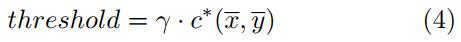
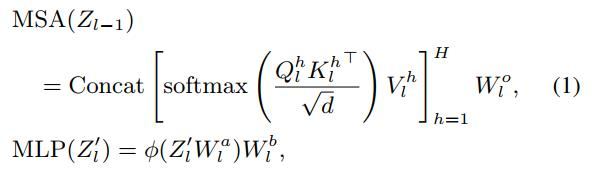
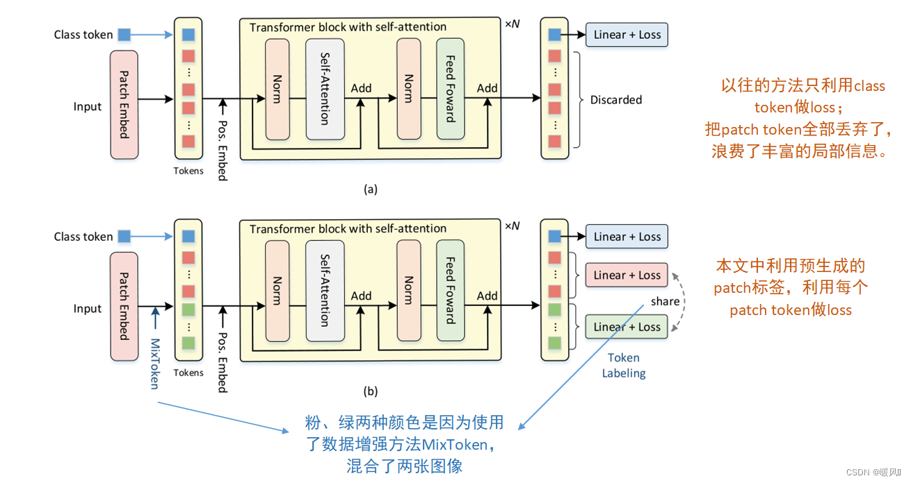

CNN-Regularization
1. 正则化
过拟合 --> 在训练集上表现很好，但在测试集上效果不佳。（随着模型复杂度增加，训练误差减小，测试误差不减）
发生过拟合时，模型的偏差小而方差大。
正则化 --> 解决模型过拟合问题！
正则化通过对学习算法进行微调，使得该模型具有更好的泛化能力，改善模型在未知数据上的表现。
过拟合的本质是训练算法从统计噪声中获取了信息并表达在了模型结构的参数当中。
过拟合 --> 指过于紧密或精确地匹配训练集数据，以致于无法良好地拟合测试集数据 --> 过拟合一般可视为违反奥卡姆剃刀原理（简约法则，若无必要，勿增实体）
过拟合存在的原因 --> 选择模型的标准和评价模型的标准不一致导致的。 选择模型时往往选取在训练数据上表现最好的模型；而评价模型时则是观察模型在不可见数据上的表现。当模型尝试“记住”训练数据而非从训练数据中学习规律时，就可能发生过拟合。
在统计学系和机器学习中，为了避免或减轻过拟合，可使用以下技巧：
模型选择 Model Selection --> 给定数据的情况下，从一组模型中选出最优模型（或具有代表性的模型）的过程。
交叉验证 Cross-Validation–> 一种预测模型拟合性能的方法。包括 Leave-one-out Cross-Validation 和 K-fold Cross Validation。
提前停止 Early Stopping --> 当训练集上的 loss 不再减小（减小的程度小于某个阈值）时停止继续训练，即用于提前停止训练的回调函数callbacks。
正则化 Regularization --> 机器学习和逆问题领域中，正则化 是指为解决适定性问题或过拟合而加入额外信息的过程。
剪枝 Pruning --> 机器学习和搜索算法中，通过移除决策树中分辨能力较弱的部分而减小决策树大小的方法，其降低了模型的复杂度，因此能够降低过拟合风险，从而降低泛化误差。
贝叶斯信息量准则 Bayesian Information Criterion / Schwarz Information Criterion --> 在有限集合中进行模型选择的准则。
赤池信息量准则 Akaike Information Criterion --> 基于信息熵，用于评估统计模型的复杂度和衡量统计模型拟合资料的优良性的一种标准。
dropout --> Hinton 提出的一种正则化方法，即在神经网络训练过程中，通过随机丢弃部分神经元，来减小神经元之间的协同适应性，从而降低网络过拟合风险。
正则化 --> 深度学习中，正则化是惩罚每个节点的权重矩阵。
用于深度学习的正则化技巧：
L1 & L2 正则化 --> 均是在损失函数 cost function 中增加一个正则项，即：
2. Regularization For Deep Learning: A Taxonomy_2017
正则化的定义很多，作者提出一个系统的，统一的分类方法将现有的正则化方法进行分类，并为开发人员提供了实用的正则化方法的建议。
作者将目前的正则化方法分类为 affect data 影响数据、network architectures 网络架构、error terms 错误项、regularization terms 正则化项、optimization procedures 优化过程 这几种方法。
在传统意义上的优化和较老的神经网络文献中，正则化只用于损失函数中的惩罚项。
2016年 Goodfellow 等人 将正则化广泛定义为：为减少模型的测试误差，而非训练误差，对学习算法所作的任何修改。即，正则化被定义为：
任何使模型能够更好地泛化的辅助技术，即在测试集上产生更好效果的技术都被称为正则化。–> 该定义更符合机器学习文献，而非逆问题文献。可包括损失函数的各种属性，损失优化算法或其他技术。
为了为接下来提出的分类法的顶层提供一个证明，作者梳理了机器学习的理论框架。
2.1. 理论框架
机器学习的中心任务是 模型拟合：找到一个函数 ，它能很好地近似从输入 到期望输出 的期望映射。
很多应用中，神经网络已被证明是一个选择 的很好的函数族。
一个神经网络是一个具有可训练权值 的函数 。
训练网络意味着找到一个使损失函数 最小的权重配置 ：
通常损失函数采用期望风险的形式：
其中包含两部分：误差函数和正则化项。
误差函数 --> 依赖于目标，并根据其与目标的一致性对模型预测分配惩罚。
正则化项 --> 根据其他标准对模型进行惩罚。这个标准可以是除了目标以外的任何东西，例如权重。
由于数据分布 是未知的，所以根据公式（2）期望风险不能直接降到最低。相反，给出了从分布中采样的训练集 。期望风险的最小化可以通过最小化经验风险 得到。
其中， 是来自训练集 的样本。
公式（3）给出了最小化经验风险，作者根据公式中的元素，将正则化方法分为以下几类：
：训练集 --> affect data 影响数据
：选择的模型族 --> network architectures 网络架构
：错误函数 --> error terms 错误项
：正则化项 --> regularization terms 正则化项
优化过程本身 --> optimization procedures 优化过程
2.2. 1 通过数据进行正则化
训练模型的质量很大程度取决于训练数据。
通过对训练集 应用一些变换 生成一个新的数据集，从而实现对数据的正则化。
进行数据正则化可根据以下俩原则：
1）进行特征提取或预处理，将特征空间或数据分布修改为某种表示，从而简化学习任务；
2）允许生成新样本来创建更大的、可能是无限的增强数据集。
这两个原则在某种程度上是独立的，也可相结合。它们均依赖于（随机）参数的转换：
作者给出第二个定义：
带有随机参数的变换是一个函数 ，其参数 遵循某种概率分布。
所以，在此情况下，考虑 可作用于 网络输入、隐层激活或目标。 输入被高斯噪声破坏（给输入数据添加高斯噪声）是随机参数变换的一个例子。
变换参数的随机性带来新样本的产生，即 data augmentation 数据增广。数据增广通常专门指输入变换或隐藏激活。
作者根据变换的性质及其参数的分布对基于数据的正则化方法进行分类。
2.2.1. 变换参数 的随机性
确定性参数：参数 遵循 delta 分布，数据集大小保持不变。
随机性参数：允许生成一个更大的，可能是无限的数据集。 的采样方法多种多样，有：
1）随机：从指定的分布中画一个随机的
2）自适应： 的值是一个优化过程的结果，通常目标是一个最大化变换样本上的网络误差（这种具有挑战性的样本被认为是当前训练阶段信息量最大的样本），或最小化网络预测和预定义的假目标 之间的差异。
约束优化：通常在硬约束下最大化误差找到 （支持 的分布控制最强的允许变换）；
无约束优化：通过最大化修正误差函数找到 ，使用 的分布作为权重（为了完整性在此提出，但并未测试）；
随机：通过获取固定数量的 样本并使用产生最高误差的样本来找到 .
2.2.2. 对数据表示的影响
保留表示的转换 Representation-preserving transformations：保留特征空间并尝试保留数据分布。
保留修改的转换 Representation-modifying transformations：将数据映射到不同的表示（不同的分布甚至新的特征空间），这可能会解开原始表示的潜在因素并使学习问题更容易。
2.2.3. 转换空间
输入：对输入 进行变换；
隐藏特征空间：对样本的一些深层表示进行变换（这也使用部分 和 将输入映射到隐藏特征空间；这种变换在网络 内部起作用，因此可被认为是架构）
目标：转换应用于 （只能在训练阶段使用，因为标签在测试时没有显示给模型）
2.2.4. 普遍性
通用 Generic ：适用于所有数据域；
特定域 Domain-specific：针对当前问题的特定（手工制作），例如图像旋转。
2.2.5. 分布的依赖关系
：所有样本的 分布相同
：不同目标（类别）的 分布可能不同
：
：
：
：
：
：
以上方法的综合：即 , , , , ,
2.2.6. 阶段
训练：训练样本的转换。
测试：测试样本的转换，例如对样本的多个增强变体进行分类，并将结果汇总在它们之上。
表1回顾了使用通用转换的现有方法：
表2列出了特定域的方法，特别侧重于图像领域。最常用的方法是：图像的刚性变形和弹性变形。
2.2.7. 目标保留数据增广
目标保留数据增广 --> 在输入和隐藏特征空间中使用随机变换，同时保持原始目标
未完待续！！！
2.2.8. 基于数据的正则化方法的总结
作者对基于数据的正则化方法进行了形式化，展示了**看似与数据正则化无关的技术，例如保留目标的数据增广、dropout 或 Batch Normalization 等技术在方法上惊人的近似，都可看做是基于数据的正则化方法。**
2.3. 2 通过网络架构进行正则化
为了实现正则化效果，可以选择具有特定属性或匹配特定假设的网络架构 .
2.3.1. 关于映射的假设
为了很好地拟合数据 ，输入-输出 的映射 必须具有某些属性。尽管执行理想映射的精确属性可能很难，但可通过关于映射的简化假设来近似它们。这些属性和假设可以以硬或软的方式强加于模型拟合。这限制了模型的搜索空间，并允许找到更好的解决方案。
** 作者讨论的对 输入-输出 映射施加假设的方法是网络架构 的选择。**一方面，架构 的选择 硬连接了映射的某些属性；此外，在 和优化算法之间的相互作用中，某些权重配置比其他配置更可能通过优化获得，从而进一步以软方式限制可能的搜索空间。
对映射施加某些假设的补充方法是正则化项，以及**（增广）数据集中存在的不变性**。
假设可以 硬连接 到某些层执行的操作的定义中，和 / 或层之间的连接中。
**基于网络架构的方法如表三**所示：

在隐藏特征空间中对数据进行变换的正则化方法可被视为体系结构的一部分。也就是说，在隐藏特征空间中对数据进行变换的正则化方法既属于数据正则化，也属于网络架构正则化。
2.3.2. 权值共享 Weight sharing
权值共享 --> 在网络的多个部分重复使用某个可训练参数。例如，卷积网络中的**权值共享不仅减少了需要学习的权重的数量，它还编码了 shift-equivariance 的先验知识和特征提取的局部性。**
2.3.3. 激活函数 Activation function
选择正确的激活函数非常重要。例如：
1）ReLUs ** 在训练时间和准确性方面提高了许多深度架构的性能。ReLUs 的成功既可归因于：ReLUs 可避免梯度消失问题；也可归因于：它们提供了更有表现力的映射家族 more expressive families of mappings**。
一些激活函数是专门为正则化设计的。
2）Dropout ，Maxout 单元允许在测试时更精确地逼近模型集合预测的几何平均值。
3）Stochastic pooling 随机池化 是最大池化的噪音版本。作者声称，这允许对激活的分布进行建模，而不仅是取最大值。
2.3.4. 噪声模型 Noisy models
Stochastic pooling 随机池化是确定性模型的随机泛化的一个例子。有些模型是通过向模型的各个部分注入随机噪声来实现的。 Dropout 是最常用的噪声模型
2.3.5. 多任务学习 Multi-task learning
**多任务学习 --> 是一种特殊类型的正则化。**它可与半监督学习相结合，在辅助任务上利用未标记数据。
元学习中也使用了任务之间共享知识的类似概念，其中来自同一领域的多个任务被顺序学习，使用先前获得的知识作为新任务的偏差。
迁移学习，将一个领域的只是迁移到另一个领域。
2.3.6. 模型选择 Model selection
可通过评估验证集上的预测来选择几个经过训练的模型（例如，具有不同的架构）中最好的模型。
2.4. 3 通过误差函数进行正则化
**理想情况下，误差函数 （表示输出与目标的一致性） 反映了适当的质量概念，在某些情况下还反映了一些关于数据分布的假设。**典型的例子是：均方误差 或 交叉熵。
** 误差函数 也可以具有正则化效果。**例如，Dice coefficient optimization 系数优化，它对类别不平衡具有鲁棒性。
2.5. 4 通过正则化项进行正则化
正则化可以通过在损失函数中添加正则化器 来实现。与误差函数 （表示输出与目标的一致性）不同，正则化项独立于目标。相反，正则化项用于编码所需模型的其他属性，以提供归纳偏差（即关于映射的假设，而不是输出与目标的一致性）。 因此，对于未标记的测试样本，正则化项 的值能计算出来，而误差函数 不能计算。
正则化项 与目标 的独立性有一个重要含义：它允许额外使用未标记的样本（半监督学习），根据其符合一些期望的属性来改进学习模型。
一个经典的正则化方法是 weight decay 权值衰减
其中， 是一个加权项，用于控制正则化对一致性的重要性。
从贝叶斯的角度来看 ，权重衰减对应于使用对称的多元正态分布作为权重的先验：
图4 回顾了现有的通过正则化项进行正则化的方法。权重衰减（L2正则化）似乎仍然是最流行的正则化项。
L2 正则化的目的就是为了让权重衰减到更小的值，在一定程度上减少模型过拟合的问题，所以权重衰减也叫 L2 正则化。
2.6. 5 通过优化进行正则化
**随机梯度下降（SGD）及其衍生 是深度神经网络中最常用的优化算法，也是我们关注的中心。**作者也在下文列出了一些替代方法。
随机梯度下降法（SGD） 是一种采用以下更新规则的迭代优化算法 ：
如果算法在合理的时间内达到较低的训练误差（与训练集的大小呈线性关系，允许多次通过训练集 ，那么在某些温和的假设下，解决方案的泛化效果很好，从这个意义上来说：
SGD 作为一个隐性的正则化器：即使没有使用任何额外的正则化器，较短的训练时间也能防止过拟合。 --> 这与论文《Understanding deep learning requires rethinking generalization 》中的观点一致：该论文作者在一系列实验中发现，正则化（例如 Dropout、数据增广和权重衰减）本身既不是良好泛化的必要条件，也不是充分条件。
作者将通过优化进行正则化的方法分为三组：
初始化 /热启动方法
更新方法
终止方法
2.6.1. Initialization and warm-start methods 初始化/热启动方法
2.7. 建议、讨论、结论
2.7.1. 1 该分类法的优势：
作者认为这样的分类法的优势有两个方面：
1）它为正则化方法的用户提供了现有技术的概述，并让他们更好地了解如何为他们的问题选择理想的正则化技术组合。
2）它对于开发新方法很有用，因为它全面概述了可用于正则化模型的主要原则。
2.7.2. 2 作者建议：
2.7.2.1. 1. 对现有正则化方法用户的建议
总的来说，尽可能多地使用数据中包含的信息以及先验知识，并主要从流行的方法开始，以下程序可能是有帮助的:
对于第一步的常见建议：
1）深度学习就是要把变异的因素分解开来。应该选择一个合适的数据表示；已知的有意义的数据转换不应该外包给学习。 在几种表征中，冗余地提供相同的信息是可以的。
2）输出非线性和误差函数应该反应学习目标。
3）一个好的起点是通常工作良好的技术（例如，ReLU，成功的架构）。超参数（和架构）可以联合调优，但是很缓慢（根据经验进行插值 / 推断，而不是尝试太多的组合）。
4）通常， 从一个简化的数据集（例如，更少和/或更简单的样本）和一个简单的网络开始是有帮助的， 在获得有希望的结果后，在调优超参数和尝试正则化方法时逐渐增加数据和网络的复杂性。
通过数据进行正则化：
1）当不处理几乎无限 / 丰富的数据时：
如果可能的话，收集更多的真实数据（并使用考虑到其属性的方法）是可取的：
- 有标记的样本是最好的，但无标记的样本也可能有用（兼容半监督学习）。
- 来自相同领域的样本是最好的，但来自相似领域的样本也会有帮助（兼容领域适应和迁移学习）。
- 可靠的高质量样本是最好的，但低质量样本也有帮助（它们的信心 / 重要性可以相应地调整）。
- 给额外的任务贴上标签会很有帮助（与多任务学习兼容）。
- **额外的输入特性（来自额外的信息源）和 / 或数据预处理（即特定于领域的数据转换）**可能会有所帮助（网络架构需要相应的调整）。
数据增广（例如，保留目标的手工特定领域转换）可以很好地弥补有限的数据。如果一直增强数据的自然方法（充分模拟自然转换），则可以尝试（并组合）它们。
如果增广数据的自然方法未知或被证明是不充分的，如果有足够的数据可用，就有可能从数据中推断出转换（例如学习图像变形字段）。
2） 流行的泛型方法（例如 Dropout 的高级变体）通常也有帮助。
架构和正则化项：
1）关于映射的可能的有意义的属性的知识可以被用来如将不变性（对某些转换）硬连接到架构中，或者被表述为正则化项。
2）流行的方法也可能有帮助（见表3和表4），但应该选择匹配映射的假设（例如，仅当需要对常规网格数据进行局部和移位等变特征提取时，卷积层才完全合适）。
优化：
1）初始化：尽管预训练的现成模型大大加快了原型的制作速度，但良好的随机初始化也应该被考虑。
2）优化器：尝试一些不同的方法，包括先进的（例如 Nesterov momentum, Adam, ProxProm），可能会带来更好的结果。正确选择的参数，例如学习率，通常会产生很大的不同。
2.7.2.2. 2. 对新正则化方法的开发人员的建议
了解最佳方法成功的原因是一个很好的基础。有希望的空白领域（分类法属性的某些组合）是可以解决的。强加在模型上的假设可能会对分类法的大多数元素产生强烈的影响。 数据增广比损失项更有表现力（损失项只在训练样本的无限小的邻域强制属性；数据增广可以使用丰富的转换参数分布）。数据和损失项以相当软的方式强加假设和不变性，并且可以调整它们的影响，而硬连接网络架构是强加假设的更苛刻的方式。施加它们的不同假设和选项具有不同的优点和缺点。
2.7.2.3. 3. 基于数据方法的未来方向
作者认为以下几个有前景的方向值得研究：
1） 的自适应采样可能会导致更低的误差和更短的训练时间（反过来，更短的训练时间可能会额外起到隐式正则化的作用）。
2）作者认为学习类依赖变换会导致更可信的样本。
3）在最近引发了关于真实世界对抗示例及其对摄像机位置变化等变换的鲁棒性 / 不变性的讨论后，对抗示例（以及对它们的网络鲁棒性）领域正获得越来越多的关注。对抗强烈的对抗性例子可能需要更好的正则化技术。
2.7.2.4. 4. 总结
在这项工作中，作者为深度学习提供了一个广义的的正则化定义，确定了神经网络训练的五个主要元素（数据，架构，错误项，正则化项，优化程序），通过每个元素描述了正则化，包括对每个元素的进一步、更精细的分类，并从这些子类别中提供了示例方法。 我们没有试图详细解释引用的作品，而只是确定它们与我们的分类相关的属性。我们的工作证明了现有方法之间的一些联系。此外，我们的系统方法通过结合现有方法的最佳特性，能够发现新的、改进的正则化方法。
3. Heuristic Dropout: An Efficient Regularization Method For Medical Image Segmentation Models_2022,Tsinghua University
3.1. Abstract
对于真实场景中的医学图像分割，像素级的准确标注数据量通常较少，容易造成过拟合问题。这篇手稿深入研究了 Dropout 算法，该算法常用于神经网络以缓解过拟合问题。这篇手稿从解决 co-adaptation problem 协同适应问题的角度出发，解释了 Dropout 算法的基本原理，并讨论了其衍生方法存在的局限性。此外我们提出一种新颖的Heuristic Dropout启发式 Dropout 算法来解决这些局限。该算法以信息熵和方差作为启发式规则。 它指导我们的算法更有效地丢弃遭受协同适应问题的特征，从而更好地缓解小规模医学图像分割数据集的过拟合问题。医学图像分割数据集和模型的实验表明，所提出的算法显著提高了这些模型的性能。
3.2. Intex Terms
医学图像分割，过拟合问题， Dropout 算法，信息熵
3.3. 1. Introduction
医学图像分割是当前计算机辅助医学诊断（Computer-aided Medical Diagnosis, CAD）系统的重要组成部分，其准确性直接影响 CAD 系统的性能。近年来，CAD 系统越来越多地参与到实际的医疗诊断任务中。因此，提高医学图像分割模型的准确性和可靠性具有重要的意义和应用价值。
在医学图像分割领域， U-Net，nnU-Net，TransUNet 等深度学习模型已经在各种任务中表现出了比传统方法更好的性能。与自然图像分割相比，**医学图像分割的数据标定高度依赖于专家知识，需要像素级的准确标定。因此，在专家指导下，像素级的准确标定数据量通常很小。**小尺度的数据集容易出、造成过拟合问题，特别是当分割模型参数量较大时。
解决过拟合问题的方法有很多， Dropout 算法是其中一种简单而有效的方法。它在训练过程中以一定的概率随机丢弃模型中的神经元，缓解了协同适应问题，从而缓解了深度学习模型的过拟合问题。Co-adaptation 协同适应是指每个神经元学习到的特征通常必须与上下文（即其他特定神经元）相结合的现象，以在训练过程中提供有用的信息。 然而，从小规模医学图像分割数据集中学习到的这种经验依赖是脆弱的，在面对测试集的分布时可能不可信。 因此，神经元之间过多的依赖关系往往会引发过拟合问题。 Dropout 算法中的 drop 操作减少了深度学习模型中神经元之间的依赖关系，防止了一些神经元过度依赖其他神经元，从而在一定程度上避免了过拟合问题。
根据 drop 过程是否完全随机，Dropout 算法的衍生方法可以分为两类。 第一类是完全随机的方法，例如 Spatial Dropout 随机丢弃通道维度中的单元，DropBlock 将 2d blocks 视为单元并随机丢弃它们，Stochastic Depth 随机丢弃残差连接。第二类是基于规则的方法 ， 例如 Weighted Channel Dropout 以通道的激活值作为指导规则，Focused Dropout 以 2d blocks 的激活值作为指导规则。然而，这两类现有方法都不是没有局限的。第一类，完全随机的方法，缺乏指导规则，因此可能效率低下，丢弃的特征不一定是遭受协同适应问题的特征，在第二类，基于规则的方法中，现有的指导规则不够准确，丢弃遭受协同适应问题的精确特征的效率仍有提升空间 。因此，本手稿提出了一种结合信息熵和方差的新的指导规则。在此规则的指导下，进一步提高了所提出的算法丢弃遭受协同适应问题的特征的效率。在多个医学图像分割数据集和模型上的实验表明，该算法显著提高了模型精度。
3.4. 2. Methodology
作者提出了一种新颖的启发式 Dropout 算法，使用信息熵和方差作为指导规则来执行 Dropout 操作。该算法能够有效地丢弃遭受协同适应影响的特征，从而在很大程度上缓解了医学图像分割任务中的过拟合问题。
3.4.1. 2.1. Heuristic Metric
为了有效地丢弃协同适应问题较严重的特征，作者采用信息熵作为启发式规则。信息熵可以衡量一个分布的不确定性。

其中， 是一个随机变量， 是概率密度函数， 是关于随机变量 的信息熵。
如 Dropout 一文中的图7所示，遭受严重协同适应的特征具有不确定的视觉意义，因此具有较高的信息熵值，而遭受轻微协同适应的特征具有确定的视觉意义，例如，看起来像目标的点、边缘或几何轮廓，这些特征的信息熵值较低。以信息熵为指导原则，我们以更高的概率丢弃遭受严重协同适应问题的特征。此外，我们还需要方差作为另一个启发式规则。考虑 一个极端的情况，当分布接近于常量分布时，已知信息熵将接近最小值。然而，具有常量分布 constant distribution 的特征对训练几乎不提供什么有用的信息。因此，将方差作为另一个启发式规则，我们以更大的概率丢弃更接近常量分布的特征。
3.4.2. 2.2. Heuristic Dropout Algorithm
结合信息熵和方差两种启发式规则，得到算法1。
我们计算输入特征图 input feature maps 的每个通道的信息熵 和方差 。我们使用 作为指导规则。因为 feature maps 的值是连续分布的，所以我们首先要对值进行量化，然后根据直方图计算信息熵，如算法2所示。还发现使用 的 Laplace 滤波器代替 all-zero 滤波器作为 drop mask 将为模型性能带来一点提升。
我们的算法可无缝插入到各种模型中。以 U-Net 为例，我们在 U-Net 的编码器和解码器的每个阶段的两个连续卷积层之间插入所提出的算法，即：在前一个卷积层的激活函数之后，正好在下一个卷积层之前。
3.5. 3. Results
3.5.1. 3.1. Datasets
作者在 Pancreas-CT 数据集和 BAGLS 数据集上进行实验。**考虑到在实际应用环境中，由经验丰富的专家标记的训练样本一般很少，我们专门从这些数据集中随机抽取一个子集进行试验。**对于 Pancreas-CT 数据集，我们随机选择12个扫描，然后将其转换为2545个 的 2D 切片，以方便训练模型。在这 12幅 3D CT 扫描中，我们随机选择 8幅 作为训练集，2幅 作为验证集，2幅 作为测试集。对于 BAGLS 数据集，我们随机选择 3000个 切片作为训练集，而验证集和测试集的大小保持与原始设置相同。
3.5.2. 3.2. Evaluation Metrics
为了对实验结果进行定量分析，我们采用了医学图像分割领域中广泛使用的 DICE 值 和 **IoU 值**作为评价指标。
其中， 表示模型输出的掩膜 mask， 表示输入图像对应的真值 ground truth.
3.5.3. 3.3. Experimental Settings
我们使用 Adam optimizer 来训练所有的模型，学习率为 ，，， 。batch size 的大小设置为可以在 GeForce RTX 2080 Ti 上以混合精度执行的最大值。我们使用 CrossEntropy 并在 Pancreas-CT 数据集上训练100个 epoch。我们使用结合 CrossEntropy, DiceLoss 和 SSIMLoss 的混合损失函数，并在 BAGLS 数据集上训练 30个epoch。我们在训练数据集上使用标准数据增广。不对模型的输出结果进行后处理。我们独立重复所有对比试验5次并报告平均结果。
3.5.4. 3.4. Comparison with Dropout Derivative Methods
为了验证该算法的有效性，我们在 Pancreas-CT 数据集和 BAGLS 数据集上进行了实验。我们将我们的算法和其它 Dropout 的衍生算法加入到几个模型中。图1 为实验结果的箱线图 box plots，表1为定量和整体对比。
试验结果表明，该算法在 Pancreas-CT 和 BAGLS 两个数据集上的性能都优于其他 Dropout 衍生方法。在 Pancreas-CT 数据集上，我们的算法对 U-Net 和 Attention U-Net 的 DICE 值分别提高了 3.67 和 3.37。在 BAGLS 数据集上，我们的算法对 U-Net 和 UNet3+ 的 IoU 值分别提高了 2.97 和1.12。该算法可以更加有效地提高医学图像分割模型的性能。
3.5.5. 3.5. Comparison Study on Hyperparameter
基于 U-Net 和 Pancreas-CT 数据集，作者研究了超参数 的影响。随着 的增加，性能呈现先增加后衰减的趋势，当 为 3 时，性能最好。此外，从方框的方差（the variance of the box）可以看出，当 为 2 时，模型性能比 为 3 时更稳定和可预测。
3.5.6. 3.6. Verify Effectiveness of Alleviating Co-adaptation
为了验证我们的算法比传统的 Dropout 更有效地缓解协同适应，我们在 Pancreas-CT 数据集上随机隐蔽了 U-Net 最终输出层之前的一定比例的中间特征图（intermediate feature maps）。对于协同适应较少的模型，由于特征之间的依赖关系较少，掩蔽特征（masked features ）导致的性能下降应该更小。 如图 4 所示。我们的算法在隐蔽后的性能下降明显小于传统的 dropout。实验结果表明，使用我们的算法可以学习到更多独立特征和更少的依赖关系，因此我们的算法可以比传统的 Dropout 算法更大程度地缓解协同适应。
3.5.7. 3.7. Visualization of Segmentation Results

图 2 演示了定性分析的可视化。从上到下显示三个切片的分割结果。可视化图表明，我们的算法能更准确地分割模型。
3.6. 4. Conclusion
作者提出了一种新的启发式 Dropout 算法来解决小规模医学图像分割数据集的过拟合问题。该算法以信息熵和方差作为启发式规则，更有效地缓解了协同适应现象，从而更好地缓解了过拟合问题。在多个数据集和模型上的实验表明，该算法具有较好的性能。此外，我们将在未来的工作中研究我们的算法与自然图像的兼容性。
-
启发式：类似于 ** 灵感**一类的东西，可以快速进行判断，不需要逻辑性的思考论证。启发式往往可以让人们 跳出当前思维的局限，但因为缺乏科学依据与缜密的逻辑验证，所以有时也会出错。
-
医学图像与自然图像的区别：
1）医学图像大多数时放射成像，功能性成像，磁共振成像，超声成像这几种方式，而自然图像大多数是自然光成像。自然成像中，光谱比较复杂，有散射的成分，波普宽度比较大，但放射成像例如 DR, CT等，各厂家需要去除人体内的散射，使光谱单一，所以，这导致了一个重要区别，也就是：
在自然图像中，噪声分布绝大多数情况下可认为是均匀的，可近似为高斯噪声，因为直射和散射光造成光场分布可认为是均匀的；
但**在医学图像中，由于光源单一再加上探测手段，人体厚度的影响往往会导致噪声分布不均匀，往往认为是一种泊松噪声**。
所以，针对医学图像的算法直接应用于自然图像效果可能不行。
2）医学图像多是单通道灰度图像，尽管大量医学图像是3D的，但医学图像中没有景深的概念。
3）同体态的医学图像相似度非常高，医学图像中的细微结构并不能像自然图像中那样认为是无关紧要的，在相似度极高的背景组织中的细微变化有可能代表着某种病变。
-
Co-adaptation 协同适应
过拟合：在训练集上实现高性能，但没法很好地泛化到看不见的数据（测试集）上。
在神经网络中，协同适应意味着一些神经元高度依赖其他神经元。如果那些独立的神经元接收到“坏”的输入，那么依赖的神经元也会受到影响，最终它会显著改变模型的性能，这就是过度拟合可能发生的情况。
Hinton 提出 Dropout 来防止过拟合：网络中的每个神经元以0和1之间的概率随机丢弃。–> Hinton 认为 Dropout 能防止过拟合的原因在于：通过实施 Dropout 模型被迫拥有可以学习良好特征（或所需数据表示）的神经元，而不依赖于其他神经元。因此，生成的模型对于看不见的数据可能更加鲁棒。
4. Inproving Neural Networks By Preventing Co-adaptation of Feature Detectors_2012_Hinton
协同适应 Co-adaptation：一个特征检测器只在其他几个特征检测器的上下文中有用。
为了阻止复杂的协同适应性，Dropout 通过在训练过程中随机丢弃一半的特征检测器，迫使 每个神经元学习检测一种特征，这种特征通常有助于产生正确的答案，因为它必须在各种内部环境中运作。
5. Neuron-Specific Dropout: A Deterministic Regularization Technique to Prevent Neural Networks from Overfitting & Reduce Dependence on Large Training Samples
5.1. Abstract
为了发展输入与输出之间的复杂关系，深度神经网络对大量参数进行训练和调整。为了使这些网络高精度地工作，需要大量数据。然而，有时训练所需的数据量并不存在或无法获得。Neuron-specific dropout (NSDropout) 被提出用来解决该问题。 NSDropout 会同时查看模型中层的训练过程和验证过程。通过比较数据集中每个神经元对每个类别产生的平均值，该网络能够丢弃目标单元。该层能够预测模型在测试过程中所观察的特征或噪声，而这些特征或噪声在观察验证样本时是不存在的。 与 Dropout 不同的是，“thinned” networks “精简”网络不能 “unthinned” “未精简”用于测试。 与传统方法（包括 dropout 和其他正则化方法）相比，Neuron-specific dropout 被证明可以用更少的数据达到类似的（如果不是更好的话）测试精度。 实验表明， Neuron-specific dropout 减少了网络过拟合的机会，并 减少了图像识别中监督任务对大量训练样本的需要，同时产生了同类最佳（best-in-class）的结果。
5.2. Keywords:
neural networks, regularization, model combination, deep learning, dropout
5.3. 1. Introduction
深度神经网络可以理解为输入与输出之间的复杂关系。通过利用数千甚至数百万个隐藏节点（神经元），这些模型可以生成一套足以预测癌症或驾驶汽车的规则。然而，要做到这一点，需要大量数据来训练并验证模型。当数据量不足时，模型可能会关注训练数据中的缺陷或者采样噪声。 换句话说，该模型将发现训练数据中存在的细节，而这些细节可能在实际应用中并不存在（该模型将发现训练数据中可能并不存在于其实际应用中的细节）。这些最终会导致过拟合，并且因为没办法做出一个完美的数据集，因此已经发展了其他方法来尝试减少模型过拟合的趋势。最流行的方法之一是，当模型的验证精度和训练精度出现偏差时，停止训练。另一个方法是实施权重惩罚，如 L1 和 L2 以及软权重共享（soft weight sharing）。
现在有几种方法来解决过拟合问题，一种是贝叶斯方法的使用。贝叶斯模型是根据贝叶斯定理构建统计模型。
贝叶斯 ML 模型的目标是在给定先验分布 prior distribution 和 likely hood 的情况下估计后验分布 posterior distribution 。这些模型与经典模型的不同之处在于包含了 或先验分布。一种流行的先验分布是高斯过程。 通过取所有参数设置的平均值，并将其值与给定训练数据的后验概率进行加权。有了先验高斯分布，我们可以假设后验分布是正态分布或落在正态钟形曲线上。假设我们有无限的计算能力，防止过拟合最好的方法是计算一个完美的后验分布。 然而，逼近后验分布 已经被证明可以在小模型上提供很好的结果。
对于具有少量隐藏节点的模型，与单个模型相比，对使用不同架构和数据训练的不同模型的值进行平均可以提高性能。然而，对于较大的模型，此过程将过于耗费资源，无法证明回报是合理的。训练多个模型是困难的，因为找到最佳参数可能会耗费大量时间，而且训练多个大网络会占用大量资源。此外，在不同的数据子集上获取足够多的数据来训练多个网络是不可能的。最后，假设你能够使用不同数据子集来训练不同架构的多个网络，在需要快速处理的应用程序中，使用所有这些模型进行测试将花费太多的时间。
这就引出了防止过拟合的第二种选择。Dropout 是一种简单而有效的方法来限制噪声对模型的影响。它通过“dropping 丢弃”隐藏或可见单元来防止模型过拟合，本质上是同时训练多个模型。通过丢弃一个单元，该单元在该步骤中不再对模型及其决策产生影响。丢弃的神经元数量由概率 决定，即独立于其它单元。

图2：左：在训练阶段，假设索引 处的值 为1时，unit 出现。假设函数 的输出在向量函数 的输出值中不是最低的 个百分比，则 的值为1。右：在测试阶段，只有当 的最终值为 1 时，unit 才会出现。
现在我们有了另一种防止过拟合的方法。 Neuron-Specific dropout 采用了从一个层中丢弃隐藏或可见单元的思想，而不是随机的丢弃它们 。与其它流行的层不同， Neurom-Specific Dropout 接受四种输入 ：layer input 层输入，the true value of the sample 样本真值，validation layer input 验证层输入，the true value of the validation sample 验证样本真值。通过了解哪些神经元的值与该类样本的验证平均值最远，我们可以找到噪声或训练数据中的伪影在哪些地方影响了我们的模型决策。丢弃的神经元数量取决于比例 。然而，这与 Dropout 不同，因为概率 表示一层中有多少 百分比的 units 将被丢弃。例如，如果在具有 20 个 units 的层中将 设置为 0.2，那么总的会有 4个 units 被丢弃。
通常，神经网络中使用的验证数据不应该在调整超参数之外影响模型的行为，但是 neuron-specific dropout 可以提高准确性，这样就可以分割传统的训练数据集，从而永远不会使用保留的验证数据。对训练数据进行分割，以便为新的验证集保留 20% 似乎时是最佳的。
类似于 Dropout，应用 neuron-specific dropout 会产生一个 “thinned” 的神经网络。这个 thinned 神经网络保存了从神经元丢弃中幸存下来的神经元的所有值。虽然可以解释为具有 个 units 的神经网络代表 个可能的 thinned 神经网络，但众所周知，随着训练的进行，从一个步骤到下一个步骤丢弃的不同的 units 的数量会减少。同样，可训练参数的总数仍然是 ，或者更少。
与 dropout 不同的是，如果使用单个的，按比例缩小的神经网络，使用该层的好处不会显示出来。当最后一次使用 mask 时，发现测试结果最好。这是有意义的，因为与 dropout 不同， units 不是随机丢弃的。当模型开始找到受噪声和特征影响的 units 时，它会将它们归零，而把它们带回来则会带回它已经学会的在没有噪声和特征的情况下改进的权重。
本文结构如下。第 2 节描述了 neuron-specific dropout 的动机。第 3 节描述了之前的相关工作。第 4 节正式描述了 neuron-specific dropout model 和它如何工作。第 5 节一个训练 neuron-specific dropout 网络的算法，并引入了不可见验证的思想。第 6 节给出了应用 NSDropout 的实验结果，并与其他形式的正则化和模型组合进行了比较。第 7 节讨论了 NSDropout 的显著特征，并分析了 neuron-specific 的影响，以及不同的参数如何改变网络的性能。
5.4. 2. Motivation
neuron-specific dropout 的动机来自于 dropout。与 neuron-specific dropout 类似， dropout 切断了与神经元的连接。这项研究最初是出于限制数据量的想法，但当发现 neuron-specific dropout 也可以帮助减少过拟合时，这项研究很快改变了主意。在日常生活中，人们学到的信息比需要的更多，无论是从对话，新闻还是课程。当大脑认为学习到的信息以后不会再被使用时，就会失去一部分。这有助于防止大脑变得混乱。
对于这种现象产生的一个可能的解释是大脑中一种称为干扰的现象。当一个记忆干扰其他记忆时，就会发生干扰。记忆可以定义为大脑中获取，存储，保留和稍后检索信息的过程。干扰可以是主动的或追溯的（事后的）。主动干扰是指大脑由于记忆较旧而无法记住信息。追溯性干扰是指大脑在收到新信息时保留先前学习信息的能力。 Neuron-specific dropout 使用类似于追溯性干扰的方法 。虽然模型本身无法知道哪些信息是有用的（类似于人脑），但验证数据可以让它们了解它们在测试时会看到什么。通过了解验证阶段存在哪些噪声，模型可以关闭或忘记哪些信息对于测试是不必要的。当每个隐藏单元被呈现出新的信息时，即前一层的输出时，它会接收并“学习”这些信息，然后，在激活之前，它会决定哪些信息“干扰”来自验证数据的信息。
5.5. 8. Conclusion
Neuron-specific dropout (NSDropout) 是一种旨在提高神经网络准确性的 确定性正则化技术，重点关注具有少量训练数据的网络。通过传统的学习技术， 网络在一组数据的输入与输出之间建立了复杂的关系，然而这些复杂的关系往往不能泛化到看不见的未知数据。***与 Dropout 不同的是， Dropout 可以随机破坏这些复杂的关系， Neuron-specific dropout 可以帮助网络理解这些复杂的关系中哪些导致了网络的过拟合，并关闭隐藏单元，强迫网络在没有这些导致网络过拟合的复杂关系的情况下学习。*** 实验证明，使用 NSDropout 可以提高神经网络在图像分类领域的性能。NSDropout 能够在 MNIST 手写数字，Fashion-MNIST 和 CIFAR-10 中取得最好的（best-in-class）结果。
此外，为了提高图分类网络的性能，NSDropout 还减少了对大数据集的需求。当对 MNIST 手写数字进行训练时， NSDropout 网络仅使用 750 个训练样本就能达到完美的测试精度（a perfect test accuracy）。在 Fashion-MNIST 中， NSDropout 仅使用 60000 个训练样本中的 10000 个 就能达到近乎完美的准确率（a near-perfect accuracy）. NSDropout 的一个关键特征是能够在训练期间将测试精度和训练精度联系起来。 这有助于限制网络过拟合的机会。
NSDropout 的一个局限是训练模型所需时间的增加。 一个图像分类 NSDropout 模型的训练时间是相同架构的标准神经网络的 4 倍，并且没有进行优化。它需要比传统的 dropout 模型多 两倍 的时间。时间增加的一个主要原因是 NSDropout 层中按类排序和无序的多个输入。 虽然排序算法变得更快，并且可以对 NSDropout 进行更多的优化，但它们仍然占用了处理过程中的大部分时间。目前 NSDropout 只是 丢弃（drops）它认为网络过于依赖的单元，但未来的工作可能会着眼于如何调整单元而不是丢弃它，从而在更广泛的应用程序中提高性能。
6. Structural Dropout for Model Width Compression_2022
6.1. Abstract
众所周知，现有的 ML 模型是高度过度参数化的（highly over-parameterized），并且使用了比给定任务所需更多的资源。以前的工作已经探索了离线压缩模型（compressing models offline），例如，从较大的模型中提取知识到较小的模型中。这对于压缩是有效的，但没有给出衡量模型可以压缩多少的经验方法，并且需要对每个压缩模型进行额外的训练。我们提出一种只需要对原始模型和一组压缩模型进行一次训练的方法。 所提出的方法是一种 structural dropout，它会在随机选择的索引之上剪枝掉所有处于隐藏状态的元素，从而迫使模型学习其特征的重要性排序。在学习了这种排序之后，在推理阶段可以剪枝掉不重要的特征，同时保持最大的准确性，显著减小参数大小。在这项工作中，我们聚焦于全连接层的 Structural Dropout，但这个概念可以应用于任何类型的具有无序特征的层，如卷积层或 attention layers。Structural Dropout 不需要额外的剪枝 / 重新训练，但需要对每个可能的隐藏大小（each possible hideen sizes）进行额外的验证。在推理阶段，非专业人员可以在广泛的高压缩和更精确的模型之间选择最适合他们需求的内存与精度的权衡。
6.2. 1. Introduction
总结起来，这项工作的贡献如下：
- Dropout 的一种变体，Structural Dropout，它训练一个嵌套网络的集合，以后可以在不进行额外的重新训练（retraining）的情况下将这些网络分离出来进行压缩。
- 在 3 个示例任务上验证 Structural Dropout，证明其在保持准确性的同时，各种方法的有效性。
- Structural Dropout 的实现：An Implementation of Structural Dropout
在训练过程中，Structural Dropout 并不是随机选择要剪枝的索引，而是在统一随机选择索引（a uniformly randomly selected index）后剪枝所有节点，并根据丢弃的特征数量对期望进行归一化。在一定的可能性下，我们运行整个网络，用它间接地监督较小的网络（间接将其用作较小网络的监督）
6.3. 5. Discussion
Structural Dropout 作为现有架构的最小补充，可以执行超参数搜索和压缩。由于它不需要昂贵的重新训练和额外的领域知识，因此它比特定领域的修改更容易采用，并且与剪枝和量化正交。
在我们的实验中，很明显存在信息饱和的陡峭悬崖，并且可以以最小的精度变化来修剪 50%-80%之间的重要特征。如在 PointNet 上所见，当使用更高的 dropout rate 进行更积极的剪枝时，可以在不损失精度的情况下剪枝高达 80%。
Structural Dropout 也可能有助于提高性能，因为纯粹通过对多个模型进行采样，其中一个模型可能在给定任务上表现更好。
6.4. 6. Limitation
虽然我们的方法可以直接添加到现有的体系架构中，但它也有一些缺点。
一个显著的缺点是 SD 增加了搜索空间，使问题变得更加困难。 由于问题更加困难，尽管使用更少的参数可以加快速度，但训练过程可能需要更长的时间。这个训练时间并不比原来长很多，但是不清楚到底长多少。除了增加的训练时间之外，比较所有通道宽度的验证损失是缓慢的，因为有大量的模型需要测试。 如果资源可用，这可以很容易地并行化，因为与训练不同，模型将是只读的，否则可以执行稀疏搜索。
SD 的另一个缺点是，它在训练过程中更难以验证和跟踪收敛。 由于 low channel width，模型在训练过程中可能随机出现精度较低的情况，因此很难确定模型的收敛性。所以，对于之前训练过的模型使用 SD 是有意义的，并且先验收敛参数已经设置。在这些模型上，它也可以用作对通道宽度执行超参数搜索的一种方式。
此外，虽然我们假设所有的 SD 尺寸（SD sizes）在推断时应该是相同的，但在一个具有各种层的较大模型中，情况可能并非如此。对所有可能的通道大小选择执行详尽的搜索将是昂贵的，因此有效的搜索策略很重要。一个常见的假设是每个选择都可以独立做出，但我们将这一探索留给未来的工作。
最后，我们的方法不能剪枝整个层，因为 SD 仅限于改变神经网络的宽度，而不能修改它的深度。 因此，性能瓶颈是深度的网络将无法获得同样多的好处。
6.5. 7. Future Work
虽然我们展示了 Structural Dropout 在 FC 层上的应用，但同样的原理可以扩展到其他类型的层。例如，同样的思路也适用于 CNN 的 channel dimension，允许对特征进行修剪。另一种可能的扩展是针对 transformers，在 transformers 中选择多个注意力头 （ a number of attention heads）很重要。 Structural dropout 可应用于注意力头的大小和注意力头的数量。我们希望将这项工作扩展到探索在各种架构中使用 Structural Dropout 以实现实用的和高效的压缩。
6.6. 8. Conclusion
Structural Dropout 是一种用于推测时间压缩（inference-time compression）的方法，可用作现有架构的 drop-in layer，以最小的精度损失实现大量的压缩。这是作者所知道的第一种方法，它允许在单个训练会话（a single training session）中训练许多任意压缩的模型，然后联合部署它们，代价是只部署最大的模型。从我们的实验中，我们希望 Structural Dropout 是一种用于压缩神经网络的强大工具。
7. Dropout Regularization for Automatic Segmented Dental Images_ACIIDS_2021
7.1. Abstract
深度神经网络是指具有大量参数的网络，是深度学习系统的核心。从这些系统中产生了一个挑战，即它们如何针对训练数据 和 / 或 验证数据集执行。由于所涉及的参数数量众多，网络往往会消耗大量时间，这会导致称为过拟合的情况。这种方法建议在模型的输入和第一个隐藏层之间引入一个 dropout 层 。这是非常特别的，与其他领域使用的传统 Dropout 不同，传统的 Dropout 在网络模型的每个隐藏层中引入 dropout 来解决过拟合。我们的方法涉及预处理步骤，该步骤处理数据增广以处理有限数量的牙科图像和侵蚀形态以消除图像中的噪音。此外，使用 canny 边缘检测方法进行分割以提取基于边缘的特征。除此之外，所使用的神经网路采用了 Keras 的顺序模型，这是为了将边缘分割步骤的迭代合并到一个模型中。对模型进行并行评估，首先没有 Dropout，另一个使用大小为 0.3 的 dropout 输入层。在模型中引入 dropout 作为权重正则化技术（weight regularization technique），提高了评估结果的准确性，无论是 precision 准确率还是 recall values 查全率，没有 dropout 的模型为 89.0%，而有 dropout 的模型为 91.3%。
7.2. Keywords:
Deep learning, Over-fitting, Regularization technique, Dropout
7.3. 1. Introduction
过拟合是各种深度学习系统中普遍存在的问题。当模型在训练集上训练得太好，而在测试集上训练得不太好时，通常会发生过拟合的情况。或者，欠拟合是指我们的模型在训练集和测试集上都表现不佳。
因此，这两种情况可以通过几种称为权重正则化技术（weight regularization technique）的方法来处理。这些方法包括 early stopping, L1,L2 regularization 和 Dropout。在我们的方法中，我们使用 Dropout，包括丢弃神经网络模型中隐藏和可见的单元。这是通过在训练阶段忽略在随机选择的特定神经元集（certain set of neurons）的 units 单元来实现的。从技术上讲，在每个训练阶段，单个 units 要么以 的概率从网络中丢弃，要么以 p 的概率保留，这样剩下的是一个简化的网路（reduced network）.
Dropout 背后的关键思想是在训练过程中，从神经网络中随机丢弃 units 及其它们的连接，以防止 units 过度自适应（co-adapting）。在训练阶段丢弃不同网络模型的 units 后，这使得测试更容易接近网络平均预测的效果。从 dropout 的过程中，减少了过拟合，并进一步对其他正则化方法进行了重大改进。
在其他研究（例如：Dropout Regularization in Deep Learning Models with Keras ）中，展示了 dropout 如何应用于深度学习系统。可以通过多种方式在网络模型中引入 Dropout。它可以作为输入和第一个隐藏层之间的一个层来引入。其次，它可以应用于两个隐藏层之间以及最后一个隐藏层和输出层之间。
我们提出的方法使用了第一个方法，在输入层和第一个隐藏层之间引入 dropout。Dropout 在大型网络中非常有用，它具有各种约束条件，如 learning rate, decay 和 momentum，以调高评估性能。
7.4. 5. Conclusion
Dropout 是一种通过减少过拟合来改进神经网络的技术。相比于模型的隐藏层之间引入一个独立的 dropout layer，在输入可见层中引入该算法得到了很好的结果。深度神经网络模型的训练需要很长时间，从使用我们的方法进行的实验中，我们见证了模型复杂度的降低和训练时间的增加。
我们的 Dropout 方法可以与其他正则化方法一起使用，以获得更好的性能结果。其他可用于获得更好的性能的权重正则化技术包括 early stopping 以解决在模型图上见证的验证损失变化。
- 神经元特定的 dropout 是针对训练样本不足或无法获得的问题，提出的方法能够在保证精度的同时，减少训练样本的需求。
- 用于模型宽度压缩的结构 dropout ，是针对离线压缩模型没有给出衡量模型可以压缩多少的方法且需要对每个压缩模型进行额外的重新训练的问题，作者提出的方法不需要额外的剪枝或者重新训练。
- 牙医图像自动分割的 dropout 正则化，传统的dropout是在网络模型的每个隐藏层中引入 dropout 来解决过拟合的，而作者是在模型的输入和第一个隐藏层之间引入 dropout层，也就是研究了针对牙医图像自动分割技术， dropout 通过什么样的方式能更好地应用于深度学习系统。
8. Gating Dropout: Communication-efficient Regularization for Sparsely Activated Transformers_ICML_2022
8.1. Abstract
Sparsely activated transformers, 如 Mixture of Experts(MoE)，由于其惊人的缩放能力而引起了极大的兴趣，这可以不显著增加计算成本的情况下显著增加模型大小。为了实现这一点， MoE 模型用 Transformer 中的 Mixture-of-Experts sub-layer 替换前馈子层（feed-forward sub-layer），并使用一个 gating network 门控网络将每个令牌路由到其指定的专家。由于有效训练此类模型的常见做法需要将专家和令牌分布在不同的机器上，因此这种路由策略通常会产生巨大的跨机器通信成本，因为令牌及其分配的专家可能位于不同的机器中。在这篇文章中，作者提出 Gating Dropout，它允许令牌忽略 gating network 并停留在它们的本地机器上，从而减少了跨机器通信。与传统的 dropout 类似，我们也表明， Gating Dropout 在训练中有正则化效果，从而提高了正则化性能。我们验证了 Gating Dropout 在多语言机器翻译任务中的有效性。我们的结果表明， Gating Dropout 改进了最先进的 MoE 模型，具有更快的 wallclock 时间收敛率和更好的 BLEU 分数，适用于各种模型大小和数据集。
8.2. 6. Conclusion
我们提出 Gating Dropout 作为一种通讯高效的正则化技术来训练 sparsely activated transformers。我们观察到 sparsely activated transformers，例如 MoE 模型，通常具有非常高的跨机器通信成本，因为它们需要通过 all-to-all 通信操作将令牌发送给指定专家。Gating Dropout 通过随机跳过 all-to-all 操作来降低通信成本。这种随机跳跃在训练期间也具有正则化效果，从而提高了泛化性能。多语言翻译任务的实验证明了该方法在吞吐量（throughput）、泛化性能和收敛速度方面的有效性。
关于未来的工作，我们正在研究如何通过结合 Gating Dropout 和专家剪枝来提高推理速度。Gating Dropout 目前对推理速度没有影响，因为它只是在推理阶段关闭。此外，我们还对整个训练阶段中不同 dropout rate 的影响感兴趣，因为从探索-利用的角度，探索在训练的早期阶段可能更为重要。
9. Dropout Regularization in Hierarchical Mixture of Experts_Neurocomputing_2021
专家分层混合中的 Dropout 正则化
9.1. Abstract
Dropout 是一种非常有效的防止过拟合的方法，近年来已成为多层神经网络的首选正则器。专家的分层混合是一个分层门控模型（hierarchically gated model），它定义了一个软决策树，其中叶子对应于专家，决策节点对应于在其子项之间软选择的门控模型，因此，该模型定义了输入空间的软分层分区。在这项工作中，我们提出了一种用于专家分层混合的 dropout 变体，它忠实于模型定义的树层次结构，而不是像多层感知器那样具有平面的、单元独立的 dropout 应用程序。我们表明，在合成回归数据以及 MNIST 和 CIFAR-10 数据集上，我们提出的 dropout 机制可以防止在树上的过拟合，并在多个层次上提高泛化能力并提供更平滑的拟合。
9.2. 5. Conclusions
我们提出了一种新的 Dropout 机制，可应用于专家分层混合方法及其扩展。与具有条件独立单元的平面架构上的 dropout 相比，我们的方法忠实于模型树层次结构中存在的门控依赖关系（the gating dependencies）。
我们展示了我们的方法在一个合成玩具数据集以及用于数字识别和图像分类任务的两个真实数据集上的有效性。在所有的数据集上，我们看到专家的分层混合在有太多级别和叶子时确实会过拟合，但是我们提出的方法可以作为一种有效的正则化器，其中 dropout rate 作为权衡偏差 bias 和方差 variance 的超参数。
我们还定性地评估 dropout 对模型学习到的表示的影响，这些模型通过提供可视化来可视化 dropout 的影响。由于我们仅不对称地丢弃左子树这一事实，我们的 dropout 方法有效地从具有不同复杂性的树结构模型的集合中采样。这种方法通过充当具有不同复杂性的模型的插值来引入正则化。
10. Clustering-Based Adaptive Dropout for CNN-Based Classification_PR_2020
10.1. Abstract
Dropout 被广泛用于提高深度网络的泛化能力，而目前的 dropout 变体很少动态调整网络隐藏单元或权重的 dropout 概率（dropout probabilities）以适应它们对网络优化的贡献。这篇文章提出了一种基于聚类的 dropout（clustering-based dropout），该算法基于特征、权重或它们的衍生物的网络特征，其中这些特征的 dropout 概率根据相应的聚类组自适应更新以区分它们的贡献。在 Fashion-MNIST 和 CIFAR-10 数据库以及 FER2013 和 CK+ 表情数据库上的实验结果表明，所提出的基于聚类的 dropout 比原始的 dropout 和各种 dropout 变体具有更好的准确性，并且与最先进的算法相比具有最具竞争力的性能。
10.2. Keywords:
Feature and weight clustering, Feature derivative dropout, Self-adaptive dropout probability, Facial expression recognition
10.3. 1. Introduction
为了提高深度网络的正则化能力，提出了 regularizer 正则化器、batch normalization 批归一化 和 sparse deep feature learning 稀疏深度特征学习【Sparse deep feature learning for facial expression recognition _PR_2019 】，来减少过拟合的可能性。Dropout 随机丢弃网络隐藏单元或权重，也被应用于很多目标识别问题。受隐藏单元 dropout 的启发， connection (weight) dropout 被提出来随机丢弃权重元素。Khan【Regularization of deep neural networks with spectral dropout _NN_2019 】 等人提出了对 feature map 的光谱变换进行 dropout，其中引入了与 feature map 的重塑维度（the reshaped dimension of the feature map）相对应的三种不同的变体。
然而，传统 dropout 中的隐藏单元或权重是逐个元素地抑制的，这可能会忽略元素块 element block 中隐含的结构信息。Tompson 【Efficient object localization using convolutional networks_CVPR_2014】等人提出 spatial dropout 来丢弃一整个 feature map，即同时丢弃或保留（dropped or retained）一个 feature map 的所有隐藏单元。Poernomo 和 Kang 【Biased dropout and crossmap dropout: learning towards effective dropout regularization in convolutional neural network_NN_2018】根据隐藏单元响应【Learning both weights and connections for efficient neural network _NIPS_2015】的大小将特征分为大小相等的两组，并为每一组分配一个 dropout 概率。同时，提出一个额外的 cross-map dropout，其中不同 feature maps 上相同坐标的元素被同时丢弃或保留。然而，两组不足以区分不同特征之间的贡献，应该设计更多的组。Rohit 等人【Guided dropout _AAAI_2019】根据节点的强度（the strength of each node），提出通过删除节点来引导 dropout。Zhang 等人【ML-LocNet: improving object localization with multi-view learning network _ECCV_2018】提出 region dropout，利用显著区域（salient regions）的组合进行训练。但是，区域的相对位置和大小是固定的，不够灵活。Zhang 等人【Image ordinal classification and understanding: grid dropout with masking label _ICME_2018】提出 grid dropout 来减少搜索空间，以方便对全局特征的探索。然而，相同 grid 中的元素可能彼此之间存在显著差异，因此分配给整个网格 grid 相同的 dropout 概率可能不适用于相同 grid 中显著不同的元素。
对于 dropout 的特征（hidden unit, feature or weight）分组，最先进的 dropout 变体没有以足够的灵活性和多样性来划分这些特征。实际上，对于网络反向传播，即使特征图和权重矩阵中的相邻元素对网络损失的贡献也大有不同。例如，图 1 展示了使用 ResNet18 的表情图像的特征图的活动区域，其中根据 heat maps response 热图影响将不同的 feature maps 分为三个不同的重要性等级，即：insignificant, fair and significant。直观的说，特征元素响应的大小应该与 dropout 概率负相关。然而，传统的 dropout 和最先进的变体无法收集这些 insignificant 无关紧要的 feature maps 或分布在整个 map 上的元素用于 dropout。在这项工作中，在 dropout 中引入了 network element clustering 网路元素聚类，将相似的元素分组，以使它们共享相同的 dropout 概率。因此，利用所提出的聚类方法，可以通过分配一个具有较大 dropout 概率的相应组来同时抑制不重要的元素。
对于 dropout 概率设置，在整个网络训练过程中保持固定的 dropout 概率可能会忽略不同部分对网络优化的动态影响。 Wager 等人【Dropout training as adaptive regularization _NIPS_2013】将 dropout 训练视为一种具有二阶导数近似的自适应正则化形式。 Ba and Frey 等人【Adaptive dropout for training deep neural networks _NIPS_2013】根据矩阵元素性能 matrix elements performance，提出了一种通过更新 a probability mask matrix 概率掩码矩阵的自适应 dropout 方法。在这项工作中， dropout 概率是根据平均特征响应的聚类组（the clustering group of average characteristic response）动态更新的。
图1 残差网络（ResNet18）的最后一个卷积层中示例表达式的 512 个 feature maps 中的 6 个。根据感兴趣区域对 RaFD 数据库的影响，feature maps 可以被分为不同的重要性等级（importance levels），即： insignificant, fair and significant。
为了考虑 dropout 的特征，通常使用深度网络中的全连接层特征（FC layer features，即 layer input）和权重矩阵（weight matrix）作为判别特征来确定识别性能（as the discriminative features to determine the recognition performance）。因此， FC features, the weights 及其 their derivatives 被用作聚类的特征。
这项工作的主要贡献总结如下：
- 提出了一种基于 FC features, weights or their derivatives 聚类的新型 dropout 算法；
- 根据每组 feature, weight or derivative clustering 的响应幅度，提出了 dropout 概率的自适应更新方法；
- 在 Fashion-MNIST 和 CIFAR10 数据库以及 FER2013 和 CK+ 表情数据库上取得了有竞争力的性能。
本文分为以下几个部分。第 2 节介绍了提出的 clustering-based dropout。第 3 节给出了实验结果和相应的插图。最后，在第 4 节提出结论和讨论。
10.4. 4. Conclusion
考虑到全连接特征、权重、特征和权重的衍生物中的元素对网络优化的贡献不同，提出了一种具有自适应 dropout 概率的基于聚类的 dropout 算法。本文提出的 dropout 进一步嵌入到 ResNet18 的 FC 层，用于四个公共数据库，即 Fashion-MNIST, CIFAR-10, FER2013 和 CK+，实验结果验证了所提出的 dropout 相比于其他 dropout 变体和相关的最新算法的竞争力。
虽然本文提出的基于聚类的 dropout 方法获得了具有竞争力的结果，但仍有进一步改进的空间。首先，引入超参数对网络学习的影响，如簇的数量（the number of clusters），需要进一步研究。其次，深入研究不同模型选择下基于聚类的 dropout 的理论分析。最后，提出的 dropout 应该应用于更多的模型和任务。
11. Correlation-based structural dropout for convolutional neural networks_PR_2021
11.1. Abstract
卷积神经网络很容易遭受过拟合问题的影响，因为它们在小型训练数据集的情况下经常被过度参数化（over-parameterized）。传统的 dropout 随机丢弃 feature units 对于全连接网络效果很好，但 由于中间特征的高空间相关性（high spatial correlation of the intermediate features） 而不能很好地正则化 CNNs，这 使得丢弃的信息流过网络，从而导致 under-dropping 问题。为了更好地正则化 CNNs，已经提出了一些 structural dropout methods，例如 SpatialDropout 和 DropBlock，它们通过在连续区域中随机丢弃 feature units 来实现。然而，这些方法 可能会因为丢弃关键的判别特征（ critical discriminative features ）而遭受 over-dropping 问题 ，从而限制了 CNNs 的性能。为了解决这些问题，我们提出了一种新颖的 structural dropout method，Correlation based Dropout（CorrDrop），通过 基于 feature correlation 丢弃 feature units 来正则化 CNNs。与之前的 dropout 方法不同，我们的 CorrDrop 可以 聚焦于判别信息（discriminative information），并以 spatial-wise 或 channel-wise 的方式丢弃 features 。在不同的数据集，网络架构和各种任务（如，图像分类和目标定位）上的广泛实验证明了我们的方法优于其他方法。
11.2. 1. Introduction
卷积神经网络已经广泛应用于机器学习社区和计算机视觉任务中，包括图像识别和目标检测。近年来， ResNet, InceptionNet 和 DenseNet 等很多先进的 CNNs 被设计来提高传统 CNNs 的性能。提出了更深和更宽的深度学习模型，以在各种计算机视觉任务中实现最先进的性能。然而，这些模型有数百万个参数，因此很容易遭受过拟合的问题，尤其在训练数据有限的情况下。因此，开发正则化方法来缓解 CNNs 的过拟合是必不可少的。
早期提出的正则化方法有很多，如 weight decay, early stopping, data augmentation, batch normalization 和 dropout。这些方法已被采用作为常规的工具来正则化深度神经网络。其中，传统的 dropout 在全连接（FCs）网络中运行良好。然而，这种 dropout 并不能通过在 feature map 中随机丢弃单个 feature unit 来有效地正则化 CNNs，因为空间相关的 features 仍然允许丢弃的信息在网络中流动，从而导致 under-dropping 问题。
为了使 dropout 对 CNNs 更有效，最近提出了一些 structural dropout methods，包括 SpatialDropout，Cutout 和 DropBlock ，以提高 CNNs 的正则化能力。这些方式 试图通过在 input/feature space 中随机丢弃整个 channels 或 square of regions 来正则化 CNNs。然而，由于 the feature units 以随机方式在连续区域中被丢弃，而 不考虑图像中的语义信息 ，因此它们存在 over-dropping 问题。 这种丢弃 feature unit 的随机方式可能会丢弃 the input/feature maps 中的整个判别区域（the whole of discriminative regions） ，并限制模型的学习能力。如图 1 所示， 传统的 dropout 丢弃 feature maps 中的 single unit ，而 structural DropBlock 直接丢弃 feature maps 中的 a square of feature units ，并且可能会将信息语义区域归零。
图 1. Dropout, DropBlock 和我们的 Spatial-wise CorrDrop masks（前三行）的示例。红色的部分表示要屏蔽的区域（the regions to be masked）。最后一行表示 CorrDrop 对应的相关热图（the corresponding correlation heatmap） 。聚焦于主要目标的 feature units 之间的相关性更强。 与 Dropout 和 DropBlock 相比， CorrDrop 考虑了判别性信息（discriminative information），自适应地丢弃 feature units 以缓解 under-dropping 和 over-dropping 问题。
受观察到的目标的判别区域（discriminative region of an object）将具有更高的特征相关性（feature correlations）的启发（参见图 1 最后一行），我们提出了 Correlation-based Dropout（CorrDrop），这是一种新颖且有效的 CNNs 结构 dropout 方法，该方法考虑到 spatial / channel dimensions 上的 feature correlation，从而丢弃 feature units。
不同于之前的随机丢弃 feature units 的 structural dropout methods（如 DropBlock），我们的 CorrDrop 基于判别信息（discriminative information）自适应地丢弃 feature units 。具体来说，我们 首先计算 feature correlation map 以指示最具辨别力的区域（the most discriminative regions），然后自适应地屏蔽那些辨别力较差的区域（those less discriminative regions），即特征相关值较小的区域（regions with small feature correlation values） 。由于 feature correlation 根据相关性计算的方法可以进一步分为 spatial-wise feature correlation 和 channel-wise feature correlation，我们提出了 CorrDrop 的两种变体： Spatial-wise CorrDrop 和 Channel-wise CorrDrop，它们分别在 spatial dimension 和 channel dimension 自适应地丢弃 features。如图 1 所示，与传统的 dropout 和 DropBlock 遭遇 under-/over-dropping 问题相比，我们的 CorrDrop 通过丢弃相关性较低的区域（part of less correlated regions）来生成自适应掩膜（adaptive masks）。图像分类的大量实验表明，在公共数据集上不同的 CNNs 架构下，，我们的 CorrDrop 始终优于 dropout he DropBlock。此外，我们也证明了我们的 CorrDrop 在其他计算机视觉任务（如如目标定位）中也能很好地正则化 CNN 模型。
这项工作的初步版本已经作为会议版本【Corrdrop: Correlation based dropout for convolutional neural networks _ICASSP_2020】呈现出来。在这个扩展版本中，我们包含了额外的内容，包括 the channel-wise CorrDrop，更多的消融实验，最先进的 CNNs 实验和额外的视觉任务。主要贡献可以总结如下：
- 我们提出了 Correlation based structural dropout（CorrDrop），它丢弃了 feature maps 中不太相关的特征（the less correlated features），这缓解了以前的 dropout 变体以随机方式丢弃 features 的 under-/over-dropping 问题。
- 针对 feature map 中 spatial-wise 和 channel-wise features，提出了相应的 Spatial-wise CorrDrop(SCD) 和 Channel-wise CorrDrop(CCD)。实验结果表明，它们的互补性在于 SCD 在简单数据集（如 CIFAR-10 和 SVHN）上表现良好，而 CCD 在复杂数据集（CIFAR-100 和 TinyImageNet）上表现出色。
- 在各种数据集，架构和视觉任务上的大量实验表明，我们的方法可以得到持续的改进。
这篇文章剩余部分组织如下。第 2 节简要回顾了深度学习中正则化方法和 注意力机制的相关研究成果。在第 3 节中，我们详细介绍了 CorrDrop 。第 4 节给出了实验结果。最后，我们在第 5 节得出结论。
11.3. 3. Methodology
由于 under-/over-dropping 问题，大多数现有的基于 dropout 的方法在正则化 CNNs 方面受到限制。通过利用特征的相关性，我们提出一种有效的 structural dropout： correlation-based dropout（CorrDrop），它根据判别信息（discriminative information）自适应地丢弃 feature units，并且可以有效地正则化 CNNs。考虑到 CNNs 的 spatial-wise feature correlation 和 channel-wise feature correlation，我们进一步推导出 CorrDrop 的两种变体，即： Spatial-wise CorrDrop 和 Channel-wise CorrDrop。这两种变体的流程如图 2 和 图 3 所示。在下面的部分中，我们首先描述基于特征正交性（feature orthogonality）的特征相关性（feature correlation）的计算。然后，我们根据 correlation map 来采样 mask。最后，我们说明了 Spatial-wise CorrDrop 和 Channel-wise CorrDrop 的策略。
11.3.1. 3.1. Feature correlation calculation
与以往随机丢弃 feature units 的方法不同，我们试图根据 feature correlation 来自适应地丢弃 feature units，这反映了判别信息（discriminative information）。最近的研究【Learning deep features for discriminative localization _CVPR_2016】【Grad–cam: Visual explanations from deep networks via gradient-based localization _ICCV_2017】表明，目标的判别区域（discriminative regions）将有更高的特征相关性（feature correlations）。 这些观察让我们做出基本假设，即通过丢弃那些 low-correlated features 可以更有效地正则化 CNNs。 为了表示 feature correlation，我们使用特征正交性（feature orthogonality）的度量，如之前的工作【Improved training of convolutional filters _CVPR_2019】。 给定 feature matrix ，其中， 是 feature units 的数量， 是 feature dimension。correlation 的计算可以描述如下：
其中 表示绝对值运算， 是一个大小为 的单位矩阵。我们首先对 的每一行进行归一化（normalize），根据特征正交性（feature orthogonality）计算 correlation scores。 是一个大小为 的矩阵， 表示 的第 - 行。 a single unit 的 行的非对角元素表示所有其他 feature units 的投影（Off-diagonal elements of a row of for a single unit denote projection of all the other feature units）。每行的平均值表示每个 unit 的 correlation score。 的值越高该 unit 与其他 unit 高度相关。
11.3.2. 3.2. Correlation based dropout mask sampling
为了根据 feature correlation 自适应地丢弃 units，我们根据 中的值为每个 unit 分配 丢弃概率（dropout probability）。一般情况下， 的值越大，我们的丢弃概率越小。 中第 - 个 feature unit 的丢弃概率可以表示为：
其中 和 表示 中 feature unit 的索引。为了确保丢弃概率 ，我们将每个 unit 的 correlation score 进行归一化。
基于丢弃概率 ，从伯努利分布中采样 dropout mask
经验上，类似于其他 dropout 变体，一个超参数 被引入以确保我们的 CorrDrop 不会丢弃太多 feature units。利用基于 correlation 的 dropout mask ，我们调整 keep probability 并生成另一个 mask 。当两个 masks 对应的值都为 0 时， the units 被丢弃，并得到 the final dropout mask 。CorrDrop 的 final dropout mask 可制定为：
其中 计算 的 units 数量， 计算值为 1 的 units 数量。
图 2. Spatial-wise CorrDrop 的过程。1）通过 spatial-wise local average pooling 对前一层的 feature maps 进行下采样，kernel size 和步长为 ，用于局部特征收集和降维（local features gathering and dimension reduction）。2）基于特征正交性（feature orthogonality） 计算 correlation map，并从具有自适应丢弃概率的伯努利分布中采样 dropout mask。3）通过最近邻上采样生成 CorrDrop mask。4）通过对 CorrDrop mask 和 original feature map 进行逐元素相乘得到 regularized feature 正则化特征。
图 3. Channel-wise CorrDrop 的过程。1）基于 correlation calculation 计算 correlation vector。2）根据 correlation vector 对 CorrDrop mask 进行采样，即相关越少的通道（the less correlated channels）越容易被丢弃。3）将 CorrDrop mask 与 original feature map 进行逐通道相乘。
11.3.3. 3.3 Spatial-wise CorrDrop
在空间维度，我们假设高度相关的单元（highly correlated units）构成 feature maps 中的判别部分（discriminative parts），这些判别部分应以较高的概率保留。给定中间第 - 层的 feature maps 为 ，其中， 是 feature map 中的 units 的数量， 是 channels 的数量， 和 分别表示 feature map 的高和宽。每一行 表示一个 unit 的 feature vector。由于 CNNs 中的特征是局部相关的，所以在 feature map 中丢弃单个 unit 效果不太好【Dropblock: A regularization method for convolutional networks _NIPS_2018】 。继之前的 DropBlock 在 feature map 中丢弃连续区域（continuous regions）的工作之后，我们进一步考虑每个局部区域的相关性和丢弃单元块（drop blocks of units）。为了获得一个 structural mask，我们首先通过 local average pooling 收集 feature map 中的局部信息，同时降低 feature map 的维度以加快相关性计算（correlation calculation）。当将 block 的大小设置为 时，我们在 feature map 上进行 local average pooling， kernel size 为 ，步长为 。具体来说，我们在每个 feature map 中从左到右、从上到下扫描每个大小为 的 block，并计算每个 block 的激活值的平均值，可以描述为：
得到的 feature map 是 ，其中，，，。丢弃概率 相应调整为：
通过下采样 feature map ，我们采样 corrdrop mask 为：
其中， 是如公式(1)-(3) 所示的特征相关性计算函数， 表示如公式(4)-(8)所示的 dropout mask sampling operation。为了生成 structural mask，我们采用最近邻上采样的方法将 corrdrop mask 上采样到 。 中的每一个 zero entry 将被扩展为 blocks。因此，square regions of units 将被丢弃。最后，将 the spatial-wise corrdrop mask 与 the original feature maps 的每一个通道相乘，并 masks out 掉部分 feature regions，其表示为：
其中， 表示逐点相乘运算。过程如图 2 所示。采用这种方式，我们根据局部信息来计算 feature correlation，并丢弃具有 small average correlation 的 square of regions。
11.3.4. 3.4. Channel-wise CorrDrop
除了 spatial-wise features 之外，值得注意的是，每个 CNN filter 可以检测到输入数据的不同模式，即 channel-wise features 对应不同的语义模式。 【Weighted channel dropout for regularization of deep convolutional neural network_AAAI_2019】中的工作表明，more semantic feature channels 具有 more class-specific，其中包括一些冗余和较少激活的通道。 因此，我们尝试基于 channel-wise feature correlation 来丢弃那些不相关的特征通道并提高泛化能力，从而产生我们的 Channel-wise CorrDrop。类似于 Spatial-wise CorrDrop，给定中间第 - 层的 feature maps 为 ，其中 是 feature map 中的 unit 数， 是通道数， 和 分别是 feature map 的高和宽。我们首先将第 - 层 feature map reshape 为 。同理， the channel-wise dropout mask 计算为：
其中， 是 dropout probability， 是 correlation map， 是 corrdrop mask。按如下方式执行 the channel-wise corrdrop：
其中 指逐通道相乘，如果 中的第 - 个元素为0则 的第 - 个channel 将被置 0。
11.4. 5. Conclusions
在本文中，我们提出一种新颖且有效的 structural dropout 来有效地正则化 CNNs。与现有的正则化方法会遇到 CNNs 的 under/over-dropping 问题不同，我们的方法通过基于 spatial and channel dimensions 的feature correlation 丢弃 feature 来解决这些问题。大量实验表明我们的方法在不同的机器视觉额任务，网络架构和数据集上优于其他同类方法。此外， the feature activation map 的可视化让我们了解到我们的方法可以强制模型学习更紧凑的表示（learn more compact representations）。除了图像分类任务以外，我们还验证了我们的方法在弱监督目标定位方面的有效性，并揭示了我们的方法在各种计算机视觉任务中的潜在应用。我们还表明，我们的方法可以很容易地插入普通的 CNNs 架构以正则化 CNNs。我们相信我们提出的 CorrDrop 可以作为计算机视觉社区中地通用正则化技术。
在未来的工作中，我们将进一步研究我们的方法在其他计算机视觉任务中的有效性，例如目标检测，语义分割等等。另一方面，图 8 中的 feature maps 的可视化启发我们继续利用特征的相关性来进一步提高网络的表征能力。
12. Channel DropBlock: An Improved Regularization Method for Fine-Grained Visual Classification_2021
12.1. Abstract
在细粒度视觉分类（FGVC）任务中，从同一超类别（如鸟）中对一个目标的子类别进行分类，高度依赖于多个判别特征。现有方法主要通过引入 attention mechanisms 来定位判别部分或特征编码方法以弱监督的方式提取高度参数化的特征来解决这个问题。在这项工作中，我们提出了一种名为 Channel DropBlock（CDB）的轻量级但有效的正则化方法，并结合两个可选的相关度量（alternative correlation metrics）来解决这个问题。关键思想是在训练阶段随机屏蔽（mask out）一组相关通道，从协同适应中破坏特征，从而增强特征表示（enhance feature representations）。在三个基准 FGVC 数据集上的大量实验表明，CDB 有效地提高了性能。
图1 CDB block 的说明。通道相关矩阵（the channel correlation matrix）是根据不同的度量生成的。然后，通过对 input feature map 应用 drop mask ，将一个通道及其对应的视觉组（its corresponding visual group）随机丢弃，丢弃的元素为 0，否则为1。
12.2. 1 Introduction
本论文贡献总结如下：
1）我们通过提出一种新颖的轻量级正则化结构来**解决 FGVC 任务中判别特征学习（discriminative feature learning）的挑战**，该结构丢弃一组相关通道来激发网络增强特征表示，从而提取更多的判别模式（discriminative patterns）。
2）我们提出两个指标来度量不同特征通道之间的成对相关性，这可以帮助我们深入了解特征通道。
3）我们在三个流行的细粒度基准数据集上进行了大量实验，结果表明，当应用于基线网络或集成到现有方法时，所提出的 CDB 显著提高了 FGVC 的性能。

12.3. 3 CDB: Channel DropBlock
在本节中，我们介绍了所提出的 Channel DropBlock（CDB）的细节。它是一种基于 dropout 的正则化技术，可以很容易地应用于分类模型的 convolutional feature maps，以改善 feature representations。我们首先描述动机 motivation，并与相关方法进行比较（第 3.1 节）。然后我们描述 Channel DropBlock 算法，该算法基于 channel correlation matrix（第 3.2 和 3.3 节）丢弃 correlated channel groups。
12.3.1. 3.1 Motivation
正如之前的工作【】所示，卷积特征的每个通道对应一个视觉模式。然而，由于模式之间的共同适应性，只有部分模式有助于最终预测，这将降低推理准确性，尤其是当子类别接近且难以区分时（例如，在 FGVC 任务中）。虽然 dropout 能有效地破坏特征中的协同适应性，但它对卷积特征通道的效果较差，因为这些通道是成对相关的，并且如果我们单独丢弃通道，关于输入的模式仍然可以发送到下一层。这种直觉建议我们屏蔽一组相关的通道（mask out a correlated group of channels）而不是当个通道（a single channel），以鼓励模型学习更多判别部分（discriminative parts）。CDB 的主要动机是破坏协同适应性，诱导模型充分利用更具判别性的特征（more discriminative features）。这是通过随机屏蔽整个相关通道组来实现的，这仅仅有助于最终预测的一个视觉证据。
我们最初开发 CDB 作为一种 attention-based 的方法，专门从 the input feature 中移除 the most important channel groups。这条线索类似于 ADL 的想法【】，因为我们开发了一个重要的分支和一个 dropout 分支，它们是随机选择的，并以对抗方式突出重要通道（highlight important channels）并移除最大激活的组（remove maximally activated group）。我们将这个实验作为消融研究进行，与随机选择的实验相比，改进有限，因为随机的实验可以给出更多的遮挡组合，并且更有可能破坏通道之间的协同适应（destruct co-adaptations between channels）。我们的所有实验都专注于随机选择的 Channel DropBlock。
与 MA-CNN【】在 the final feature map 上聚类通道（clusters channels）并为每个聚类设置单独的分类器相比，本文提出的 CDB 被设计作为一个正则化块（a regularization block），更灵活地应用于任何分类模型的 convolutional feature maps。
相比于 SpatialDropout【】，CDB 强调通道之间是相互关联的，视觉证据仍然可以通过单独的 dropout 发送到下一层。
与 DropBlock 【】在空间上丢弃相关单元（drops correlated units）相比，提出的 CDB 计算逐通道的相关性（calculates correlations channel-wise），并且可以通过我们提供的两个独特的相关性度量（two unique correlation metrics）来捕获更精确的视觉证据。
12.3.2. 3.2 Channel DropBlock Algorithm
Algorithm 1 和 Figure 1 展示了 the Channel DropBlock 的主要过程。具体来说，CDB 的输入是 a convolutional feature map ，其中， 是通道的数量， 和 分别表示 的高和宽。我们通过计算 each feature channel 之间的两两相似度来获得 the correlation matrix (描述在 3.3 节)。为了获得 the drop mask，CDB 首先从 中随机选择一行，通过将 top 个最相关的元素设置为0，其它元素设置为1，来生成 the drop mask 。然后，通过广播乘法（broadcasting multiplication）将 the drop mask 应用于 the input feature map。通过这种方式，连续组中的特征（features in a contiguous group）被一起丢掉，这隐藏了一个特定的判别模式，并鼓励模型学习其他有助于最终预测的判别信息（discriminative information）。与 dropout 类似，所提出的 CDB 仅在具有归一化的训练阶段起作用，在推理阶段不涉及额外的参数和计算成本。
CDB 有两个主要的超参数： 和 。参数 表示 CDB 应用的位置， 控制 dropped group 中的通道数量。
** 的影响：**随着 CNN 结构越来越深，高层神经元对整个图像反应强烈，语义丰富，但不可避免地会丢失来自小的判别区域的细节信息（detailed information from small discriminative regions）。由于 的设置不同， the input feature map 的信息也不同。在我们的实验中，我们完成了一项消融实验（图 Table 2 所述），将提出的 CDB block 应用于 CNN 的不同的层。
**设置 的值：**另一个超参数涉及到我们何时将 correlated channels 聚合成 group。这里我们将 定义为进行 CDB 时被丢弃的组中（a dropped group）通道的百分比。在实践中，不同的 correlation metrics 会导致不同的簇数 (cluster numbers) 和 each cluster 中的通道数，因此， 的设置与我们选择的 correlation metrics 不同。
图2：channel correlation metrics 的说明：(a) max activation，将通道分组为有区别的局部区域（discriminative local region）; (b) bilinear pooling metric 双线性池化度量，根据 visual pattern 视觉模式对 channel 进行分组。
12.3.3. 3.3 Channel Correlation
理想情况下， a correlation metric 应该是对称的，并且可以将 feature channels 聚集到不同的 visual pattern groups。在本文中，我们研究了两个候选 metric 来评估 channel 之间的 correlation。
Max activation metric. 为了将 feature channels 分成 group，一个直观的想法是将 feature channels 分成不同的焦点局部区域（different focused local regions）。受 MA-CNN【】思想的启发，我们将最大激活位置接近的通道视为一个 pattern group（we treat channels with close maximal activation position as one pattern group）。 我们使用 average pooling 来平滑 feature maps 并使用 argmax(.) 操作来获得 each feature channel 中峰值响应的坐标，这将 the input feature map 转换为位置矩阵 ，由下式给出：
其中，， 是第 个 channel 的峰值响应的坐标。然后计算每个激活位置之间逐对的欧氏距离并获得 the correlation matrix ：

在该度量中，feature channels 被分组成 discriminative local regions 具有区别性的局部区域。此外，它是一个无参数的度量，不涉及可学习的参数。 Figure 2(a) 展示了 the max activation metric 的过程。
Bilinear pooling metric. 我们还研究了一个基于 bilinear pooling operator 的 correlation metric【】，它计算归一化余弦距离来度量通道相似性（channel similarities）。该方法将 the input feature map 重构（reshape） 为一个形状为 的矩阵，记为 。然后通过 a normalization function 和 a bilinear pooling operator 对 reshaped matrix 重构后的矩阵进行输入，得到 channels 之间的 spatial relationship：
其中， 表示矩阵第 2 维度上的 L2 normalization function。 是 the homogeneous bilinear feature 齐次双线性特征。相比于 the max activation metric，bilinear pooling metric 中的 each channel group 表示 one specific visual pattern。同样，在训练阶段和推理阶段都不涉及可训练的参数。Figure 2(b) 展示了 the bilinear pooling metric 的过程。
12.4. 5 Conclusion
本文引入了一种新颖的正则化技术，Channel DropBlock（CDB），该技术通过相关性度量对通道进行聚类，并在训练阶段随机丢弃一个相关通道组（a correlated channel group），从而破坏协同适配的特征通道（destructs feature channels from co-adaptations）。我们证明，与现有的 FGVC 方法相比，CDB 在增强特征表示和提取多种判别模式方面更加轻量级和有效。我们在三个经过广泛测试的细粒度数据集上进行了实验，验证了所提出方法的优越性。未来工作的两个特别有趣的方向包括探索具有自适应大小的通道分组方法，以及使用综合指标度量通道相关性。
13. FocusedDropout for Convolutional Neural Network_2021
13.1. Featured Application:
作者提出了一种 non-random dropout 非随机的 dropout 方法，称为 FocusedDropout，旨在使网络更关注目标。它可以有效地提高深度学习中特征学习的性能，可以用于任何具有深度学习技术的应用。
13.2. Abstract
在卷积神经网络（CNN）中，dropout 不能很好地工作，因为在特征空间相关的卷积层中，丢弃的信息并不完全被掩盖（dropout cannot work well because dropped information is not entirely obscured in convolutional layers where features are correlated spatially）。除了随机丢弃 regions 或 channels 之外，很多方法试图 通过丢弃 influential units 来克服这一缺陷。在本文中，我们提出一种 non-random dropout方法，称为 FocusedDropout，旨在使网络更关注目标。 在 FocusedDropout 中，我们使用一种简单但有效的方法来 搜索与目标相关的特征（to search for the target-related features），保留这些特征并丢弃其他特征 ，这与现有方法相反。我们发现这种新方法可以通过使网络更加专注于目标来提高网络性能。此外，在使用 FocusedDropout 时增加 weight decay 可以避免过拟合并提高准确率。实验结果表明，使用 FocusedDropout 的批处理比例为 10%，成本较低，在 CIFAR10，CIFAR100 和 Tiny ImageNet 等多个分类数据集上产生基线以上的较好的性能提升，并且对不同的 CNN 模型具有良好的通用性。
13.3. Keywords
classification; convolutional neural network; dropout; regularization
13.4. 1. Introduction
图1 CNN 中的四种 Dropout 形式。
(a) Dropout 在每个 channel 上随机丢弃 units，然而，它在 CNN 上效果不佳；
(b) SpatialDropout 随机丢弃 channel 而不是 units；
(c ) DropBlock 随机丢弃一些受 Cutout 启发的连续区域；
(d) 一些 non-random dropout 非随机 dropout 方法丢弃 influential units。
橙色的神经元、channel 和连续区域表示丢弃的部分，灰色的部分会被保留。
在本文中，我们提出 FocusedDropout 作为一种 non-random dropout method 来正则化 CNNs。受 Hence,Bau 等人提出的可视化方法 Network Dissection 的启发，我们首先选择平均激活值最高的通道，并丢弃该通道上激活值低于阈值的 units。然后，我们可以在 CNN 的空间不变性（spatial invariance of CNN）的支持下，我们可以通过丢弃所有在其余通道上与之前被丢弃的 units 具有相同位置的 units 来区分有用单元和冗余单元（we can distinguish useful units from redundant units with the support of spatial invariance of CNN by discarding all units that have the same positions as previously discarded ones on the rest of the channels）。在使用 FocusedDropout 时增加 weight decay 可以避免过拟合和提高准确性。结果，网络更多地关注与目标相关联的概率最高的 units，这对正则化特别有效。大量实验结果表明，即使成本很低， 10% 的 batches 使用 FocusedDropout，也可以在 CIFAR10，CIFAR100，Tiny ImageNet 上的基线上产生很好的性能提升，并且对不同的 CNN 模型具有良好的通用性，包括 ResNet，DenseNet，VGGNet 和 Wide-ResNet。
这项工作提供了以下主要贡献：
- 这篇文章提出了一种 non-random dropout 方法来正则化 CNNs，名为 FocusedDropout。与之前的工作丢弃 influential units 不同，它通过丢弃其它的来增强与分类相关的特征，从而有效地提高分类性能。
- 我们还提出一种辅助训练技巧来避免过拟合，在使用 FocusedDropout 的同时放大 the weight decay，并且只随机选择 10% 的 batches 来使用所提出的方法。
- 进行了大量的实验来验证性能。结果表明 FocusedDropout 是轻量级的，在许多任务中取得了最好的成绩。
13.5. 4. Our Approach
图3 FocusedDropout 的图解。选择激活值最高的 channel 作为 reference channel 来生成 the binary mask。被 the mask 覆盖之后，最有可能与目标相关的 units 将被保留，其它的将被丢弃。橙色代表被 FocusedDropout 丢弃的神经元。
FocusedDropout 是一种高度针对性的方法，它使网络更多地关注前景，而不是背景或噪声。FocusedDropout 的主要思想是保留与分类目标相关的首选位置的单元，并丢弃其他位置的单元。 根据 CNN 的空间不变性（spatial invariance），训练时图像特征的位置是固定的，因此具有相同空间位置的不同通道单元代表相同的图像特征。 受此现象的启发，FocusedDropout 使用一个二进制掩膜（a binary mask）来覆盖每个通道上具有相同位置的目标无关单元，如图 3 所示。 FocusedDropout 的算法如算法 1 所示。接下来，我们将介绍 FocusedDropout 的详细信息。
Selecting the reference channel
卷积层输出的每个通道可以看作是从图像中提取的一组特征。我们的目标是找到最有可能获得与目标相关的特征的通道（Our goal is to find the channel with the highest possibility to obtain the features relevant to the target）。 我们观察到平均激活值最大的通道对结果的影响最大，我们认为它包含最重要的特征。因此，FocusedDropout 使用 Global Average Pooling 来获取每个通道的平均激活值。为方便介绍，我们引入一下概念。
表示来自上一层的整个通道， 表示 the single-channel，即整个特征图（the entire feature map）， 表示 上一个单元的激活值。因此 的平均激活值计算为：
其中 和 是所有通道的共享宽度和高度。在获得所有的权重之后，我们选择最大的一个 作为参考通道（reference channel）， 计算为：
Finding the focused area
在获得参考通道之后，我们需要从中获取目标相关特征的位置信息。激活值高的单元对任务的影响更大，因此，我们首先在参考通道上找到最高的激活值 作为设置阈值的标准，其中， 被设置为：
我们取 0.3-0.6 之间的一个随机比率（a random ratio） 并设阈值为：
我们设置了一个 random ratio 而不是一个 certain ratio，因为不同的图像有不同数量的特征。 激活值高于阈值的单元被认为是与目标相关的单元。 这些单元位置的组合被认为是与目标相关的区域，即 focused area。
Generating the binary mask
虽然 the focused area 是从 the reference channel 中获得的，但由于 CNN 的空间不变性（the spatial invariance of CNN），其他通道上相同区域的单元仍然与目标相关。也就是说，来自前一层的不同通道从图像中提取了各种特征，但这些通道相同位置代表了图像的相同位置。因此我们需要保留每个通道在首选区域的单元。为了简化计算，我们使用了一个二进制掩码乘以所有的通道来实现这一步骤。二进制掩码（the binary mask）满足

其中， 表示二进制掩码的值， 表示 the focused area。当二进制掩码乘以所有通道时，只有 the focused area 中包含的单元可以被保留。
Magnifying weight decay（MWD）
在训练期间，我们随机选择 10% 的 batches 使用 FocusedDropout，而不是每一个 batch（During training, we randomly choose 10% of batches using FocusedDropout rather than every batch）。 仅保留 the high-weight units 可能会加重过拟合，因此我们在使用 FocusedDropout 时增加权重衰减（increase weight decay），可以限制网络对分类目标的过度关注，抑制过拟合。 这是一种新的 dropout 训练技巧，因为 dropout 通常用于每个 epoch 的所有批次中(used in all batches of every epoch)，并且在训练阶段 weight decay 是固定的。我们将应用于 FocusedDropout 的批次率（the rate of batches）称为 。通过这个技巧可以明显减少计算资源和时间消耗，并提高模型性能。在测试阶段，我们将所有的单元保留为传统的 dropout。
13.6. 6. Conclusion
在这项工作中，我们引入了一种名为 FocusedDropout 的新的正则化方法。受 Network Dissection 的启发，我们发现 CNN 的高激活值 units 通常对应于分类目标，因此，FocusedDropout 首先选择平均激活值最高的 channel 作为 reference channel 参考通道，并从中找到 the preferred area 首选区域，然后由于CNN 的空间不变性（spatial invariance ），所有通道只保留该区域的 units。 大量实验证明，FocusedDropout 对不同模型上的不同数据集都有稳健的改进。此外，在使用 FocusedDropout 的同时增加 weight decay 可以防止网络过拟合。分类激活映射（the class activation mapping）表明，该模型可以更加精确地识别目标的位置和轮廓，并通过 FocusedDropout 来正则化。我们认为 FocusedDropout 提供了一种改善 dropout 的新方法：在使网络聚焦于目标和防止过拟合之间找到平衡。
14. Regularization Overview_zjf
14.1. 1 Regularization
Deep CNNs --> over-parameterization -->over-fitting --> Regularization
over-fitting：随着模型复杂度增加，训练误差减小，测试误差不减。
Regularization：凡是能使模型的泛化能力增强，在测试集上产生更好的效果的技术都能被称为正则化。
Weight decay ：在损失函数（cost function）中添加一个惩罚项，即：在损失函数loss上增加了L1或L2范数项，达到参数惩罚的作用。
Feature Normalization ：把特征图的均值归一化为0，方差归一化为1，实验证明，这类方法能加速收敛并提高网络的泛化性能。
根据归一化的维度的不同，可以分为：batch normalization，layer normalization，instance normalization，group normalization。
Early Stopping ：在网络过拟合之前停止训练。即：在测试误差开始上升之前，就停止训练,即使此时训练尚未收敛(即训练误差未达到最小值)。
Data Augmentation ：增加训练数据集，让数据集尽可能的多样化，使得训练的模型具有更强的泛化能力。数据增广方式有：旋转/翻转/平移/饱和度/对比度/色彩抖动/随机裁剪/尺度变换/高斯处理/仿射变换等一系列处理。
Dropout ：2014年由 hinton 提出。在神经网络训练过程中，随机丢弃一部分神经元，来减低模型对部分神经元的依赖，从而降低网络过拟合的风险。
14.2. 2 Dropout
Dropout ：2014年由 hinton 提出。在神经网络训练过程中，随机丢弃一部分神经元，来减低模型对部分神经元的依赖，从而降低网络过拟合的风险。
传统的 Dropout 随机丢弃 feature units，丢弃的对象是单个的神经元，但由于卷积层特征的高空间相关性，会使得丢弃的信息流过网络（因为空间相关的特征仍然允许丢弃的信息在网络中流动）从而导致 under-dropping 问题，不能很好地正则化 CNNs。
为了解决 under-dropping 问题，研究者改变了 drop 的对象，从随机丢弃单个神经元，演变成另外两种随机丢弃方式：
• 随机丢弃空间中的 square of region（DropBlock）
• 随机丢弃整个 channel
然而，由于特征单元以随机的方式在连续区域中被丢弃，没有考虑图像中的语义信息，所以上面两种随机的方式又容易导致 over-dropping 的问题。
为了解决 over-dropping 问题，研究者转变思路，由完全随机的丢弃策略转变为有导向的丢弃策略，
同上，有导向性的丢弃策略又可以分为对空间的 dropout 和对通道的 dropout。
目前，有导向的 dropout 方法分为两类：
• 基于特征重要性等级 (WCD_AAAI_2019，CorrDrop_PR_2021，CLDM) --> 基于某种度量评估方式对空间中的连续区域或着每个通道进行重要性等级的评估，然后再根据评估结果来指导需要 drop 的区域，将评估得分高的以较高的概率保留。
• 基于注意力机制（ADCM_Neurocomputing_2020）–>将 attention 和 dropout 集成到一个通用的轻量级模块中，根据相应的 attention 机制（ADCM 中使用的是 SE-Net）算出通道 / 连续区域的激活状态，再对通道或区域进行过滤。
14.3. 3 Our Idea
idea --> 红海方向的蓝海！
Transformer + Dropout --> 空间注意力 dropout
因为 Transformer 能把图像分块，得到多个 patches，每一个 patch 将会获得一个注意力系数，再根据注意力系数决定每个 patch 是否需要被 drop。
15. An Image is Worth 16 * 16 Words: Transformers for Image Recognition at Scale_ICLR_2021
受 Transformer 在 NLP 成功的启发，我们实验直接将标准 Transformer 用于图像，并进行尽可能少的修改。为此，我们将图像分解成图像块，然后将这些图像块的线性嵌入式序列作为 Transformer 的输入。图像块等同于 NLP 中的 tokens(words)的概念，我们使用监督方式在图像分类任务上训练模型。
模型整体结构：
图1：模型概述。将图像分割为固定大小的 patches，对每个块进行 linearly embed，添加 position embeddings，并将得到的向量序列送入标准的 Transformer 编码器。为了进行分类，我们使用标准的方法在序列中添加一个额外的可学习的"classification token"。Transformer 编码器的插图受到 Vaswani 等人（2017）的启发。
因为：
标准的 Transformer --> 接收 1维 token embeddings 序列作为 input。
所以：
对于 2维 图像 --> reshape: flattened 2D patches
其中， ：原始 image 分辨率；C：通道数量； :每个 image patch 的分辨率；，patch 的数量，也是 transformer 有效输入序列的长度。
Transformer 的所有层均使用固定维度 的隐藏向量
所以：使用一个可训练的线性层将图像块映射到 维。 如式(1)所示，我们将该线性映射的输出称为 patch embeddings。
类似于 BERT 方法中的[class]token，我们在 patch embeddings 之前增加了一个可学习的 embedding:，它在 Transformer 编码器输出端的状态 作为图像的表征，如式(4)所示。
分类头在预训练阶段由带有一个隐藏层的 MLP 实现，微调阶段时由一个线性层实现。
position embeddings 加在 patch embeddings 之后，用于保留位置信息。由于使用更加高级的 2维 position embeddings 并未带来明显的性能提升，这里我们仅使用标准的可学习的 1维 position embeddings。最终加入 position embeddings 得到的向量序列作为 Transformer 编码器的输入。
Transformer 编码器由包含多头自注意力（MSA），MLP 块的层组成。每个块之前应用一个 Layernorm(LN)层，每个块之后有一个残差连接。MLP 包含两个带有 GELU 的非线性层。
15.1. https://blog.csdn.net/weixin_44106928/article/details/110268312
Vision Transformer 结合 CV 和 NLP 领域知识，对 input image 进行分块，展平成序列，输入原始 Transformer 模型的编码器 Encoder 部分，最后接入一个全连接层进行分类。
15.1.1. 数据处理部分
原始输入的图片数据是 ，先对图片做分块，再进行展平。
假设每个 patch 的长宽为 ，那么 patch 的数目为：
然后将每个 patch 展平成一维向量， 每个向量大小为：
总的输入变换为：
15.1.2. Patch Embedding
接着对每个向量都做一个线性变换（即全连接层）， 压缩维度为 ，这里我们称其为 Patch Embedding。
15.1.3. Positional Encoding
原始的 Transformer 引入了一个 Positional Encoding 来加入序列的位置信息， Vision Transformer 在这里同样引入 pos_embedding，是用一个可训练的变量来代替。
15.1.4. class_token
seq2seq 解决问题的主要思路 是通过深度神经网络模型（常用的是 LSTM，长短记忆网路，一种循环神经网络），将一个作为输入的序列映射为一个作为输出的序列，这一过程由编码（Encoder）输入与解码（Decoder）输出两个环节组成，编码器负责把序列编码成一个固定长度的向量，这个向量作为输入传给解码器，解码器输出可变长度的向量。
因为传统的 Transformer 采取的是类似 seq2seq 编解码的结构，而 Vision Transformer 只用到了 Encoder 编码器结构，缺少了解码的过程。假设 9 个向量经过编码器之后，应该选择哪一个向量进入到最后的分类头是一个问题。因此这里**作者给了额外的一个用于分类的向量，与输入进行拼接。** 这同样是一个可学习的变量。
15.2. 分类
分类头是加入了 LayerNorm 和两层全连接层实现的，采用的是 GELU 激活函数。
最终分类只取第一个，也就是用于分类的 token，输入到分类头里，得到最后的分类结果。
15.2.1. Self-Attention
Transformer 放弃使用传统的 RNN 顺序结构而 采用 self-attention 机制来使得模型能够并行化训练且掌握全局信息。
为了将 Transformer 模型适用于图像，Vision Transformer 将图像分割成很多子块并将这些子块组成线性嵌入序列，然后将这些线性嵌入序列作为 Transformer 的输入以模拟在 NLP 领域中词组序列输入。
Transformer 模型是以 self-attention 为基础的，通过 self-attention 完成模型的并行化训练。
16. Scheduled DropHead: A Regularization Method for Transformer Models_2020
16.1. Abstract
本文提出 DropHead，一种结构化的 dropout 方法（a structured dropout method），专门用于正则化 transformer 的关键组件多头注意力机制（the multi-head attention mechanism）。与随机 drop units 或 connections 的传统 dropout 机制相比，DropHead 在训练阶段丢弃整个 attention heads ，以防止多头注意力模型被一小部分 attention heads 控制。它可以帮助降低过拟合的风险，并使模型更好地从 the multi-head attention 中获益。考虑到多头性（multi-headedness）和训练动态性（training dynamics）的相互作用，我们进一步提出一种新的 dropout rate scheduler 来调整 DropHead 在整个训练过程中的 dropout rate，从而获得更好的正则化效果。实验表明，我们提出的方法可以在 WMT14 En-De translation task 中将 transformer 模型提高 0.9 BLEU score，在各种文本分类任务上的准确率约为 1.0。
17. PatchDropout: Economizing Vision Transformers Using Patch Dropout_WACV_2023
17.1. Abstract
Vision transformers 已经证明了在各种视觉任务中超越 CNNs 的潜力。但是这些模型的计算和存储需求限制了它们在许多应用中的使用，特别是那些依赖于高分辨率图像的应用，例如医学图像分类。更有效地训练 ViTs 的努力过于复杂，需要进行框架修改或复杂的训练计划。在这项工作中，我们展示了 standard ViT 模型可以通过随机丢弃 input image patches 以高分辨率进行有效训练。 这种简单的方法 PatchDropout，在标准的自然图像数据集（如 ImageNet）中减少了至少 50% 的 FLOPS 和内存，并且这些节省只会随着图像大小的增加而增加。在高分辨率医学数据集 CSAW 上，我们观察到使用 PatchDropout 可以节省 5倍的计算和内存，同时提高性能。对于具有固定计算或存储预算的从业者，PatchDropout 可以选择图像分辨率，超参数或模型大小，以从它们的模型中获得最大的性能。
17.2. 1. Introduction
Vision Transformers(ViTs) 最近被引入作为 CNNs 的一种可行替代方案。然而，由于计算瓶颈，在许多环境中尚未实现更好性能的承诺。例如，ViTs 需要在 [5] 上训练大型数据集，尽管在大型数据集上使用预训练已经部分解决了这个问题。内存和计算需求增加了这一点，因为 self-attention 机制引入了一个与 token 数量相关的二次复杂度元素（since the self-attention mechanism introduces an element with quadratic complexity w.r.t. the number of tokens）。这些瓶颈可能会导致过长的训练时间，并且对大型图像（例如医学图像分析中遇到的图像），计算和内存需求使得现有的 ViTs 不适合。
图1：PatchDropout 可以用于在高分辨率图像上有效地训练现成的 ViTs。 the input patches 的一小部分通常就足以进行准确的预测，如果使用更大分辨率的图像，性能可以提高，尽管会丢失信息。在这里，使用不同比例的 input patches 进行训练会影响模型在 CSAW（具有高分辨率图像的真实医学数据集） 上的性能。在相同的计算预算下， PatchDropout 可以提高预测性能。使用一个 16倍大的图像但保留 5% 的 patches 可以节省计算和内存，并提高性能。可以通过增加 the keep rate 来实现进一步的改进，但代价是计算量。在标准图像分类数据集中观察到类似的趋势。
这些计算问题在其他领域上也很尖锐，例如，显微镜和遥感，特别是当原生分辨率不仅是一种期望的属性，而且是准确预测的要求时。因此，一些工作专注于使用大量不同的方法使 vision transformers 更有效，这些方法通常涉及某种后处理或架构修改。这些方法在推理过程中优先考虑高效，例如在移动设备中嵌入，已被证明可以在不影响性能的情况下将运行时间减少 30% 到 50%。然而，网络训练中的瓶颈问题也不容忽视。很少有工作解决了这个主题，而这些需要架构修改或复杂训练方案的工作限制了它们的使用。高效的 ViT 训练仍然是一个重要问题，特别是对于需要大图像的应用程序，因为除了最大的机构之外，所有机构都受到训练 ViTs 的计算资源的限制。
在这项工作中，我们提出一个基本问题。在训练过程中，所有的 input patches 都是必要的吗？还是我们可以随机忽略其中的很大一部分？肯定的回答需要一种简单而有效的方法来减少计算和内存占用。我们的方法， PatchDropout，随机丢弃 input tokens，并在使用高分辨率图像时，在训练期间最多减少 5倍 的内存和计算，而不会影响模型的准确性（图1） 由于 ViTs 的性质，这可以通过现成的 vision transformers 和最小的 implementation 来实现。此外，我们表明，在给定内存和计算预算的情况下， PatchDropout 可以选择图像分辨率，超参数或模型大小，以从模型中获得最大性能。我们对具有高分辨率图像的真实医学数据集 CSAW 进行实验，并使用三个主流的数据集进一步验证所提出的方法：ImageNet，CIFAR-100 和 PLACES365。通过这些实验，我们表明：
- 我们可以在训练过程中随机丢弃 image patches而不会影响性能，并且根据图像大小将效率从 2倍 提升到 5.6倍（见图1 和图5）
- 给定相同的计算预算，放大图像和/或利用更大的 ViT 变体，同时丢弃一部分 input tokens 可以提高模型的准确性（见表3 和表4）
- PatchDropout 可以在训练过程中作为一种正则化技术，从而增加模型的鲁棒性（见图6）
这些发现以及其它消融研究表明， PatchDropout 可以节省 ViTs，允许它们在高分辨率图像上的使用，在准确性和鲁棒性方面有潜在的提高。代码地址：https://github.com/yueliukth/PatchDropout
17.3. 2. Related Work
一些研究已经研究了如何使用现有的训练有素的模型来获得更轻的 vision transformer model，以提高推理效率，例如，使用剪枝或 a teacher for distillation（用于蒸馏的教师）。DynamicViT 增加了一个预测模块，用于逐步估计每一个 patch 的 importance score 。知识蒸馏有助于训练，并且在推理过程中修剪对最终预测贡献最小的 patches。另一种剪枝方法，PatchSlimming 从最后一层识别不太重要的 patches，并将它们从前一层中删除。DVT 通过使用越来越多的 patches 训练级联 transformers 来动态确定 patches 的数量，然后在预测确定之后中断推理。
另一项研究着眼于提高训练效率。一些研究试图通过人工设计模块来优化网络架构，其中 PatchMerger 和 Token-Learner 专门为减少 tokens 的数量而设计的。EViT 学习在训练过程中逐渐保留 the attentive tokens并融合 the inattentive tokens，这导致 ImageNet 上的精度下降 0.3%，而推理速度提高了 50%。相比 EViT，本研究提出的方法是一种互补但机制更简单，不需要进行实质性修改。
最近的一些工作探索了通过选择一个 patches 的子集来学习 expressive representations 的可能性。MAE 是为了更有效的自监督预训练而设计的，提出丢弃高比例的 patches，然后通过自编码器设置来推断缺失的 patches。 我们工作的灵感源自 MAE，然而，PatchDropout 可以直接使用 standard ViTs 应用于目标任务（不像 MAE）。 在【Learnable masked tokens for improved transferability of self-supervised vision transformers】中，作者用额外的 patches 增强了 standard ViTs，这些 patches 有选择性地关注一个 patches 集合，以提高 ViTs 的可移植性。最后，【Intriguing properties of vision transformers】表明 ViTs 对随机遮挡具有鲁棒性。然而，应该注意的是，遮挡并不会导致效率的提高。
17.4. 3. Methods
Transformer 模型最初是为语言相关任务开发的，但它们的 self-attention 机制已经被证明对视觉任务也是有用的。这两个任务之间的一个重要区别是，视觉数据在外观上通常包含相当多的冗余或相关性（见图2）。这一观察结果引出了以下问题：在训练过程中我们能随机忽略 input image patches？如果是，这样做有什么好处？在这里，我们旨在回答这些问题，表明 the vision transformers 的确可以使用一小部分 the input data 进行训练并表现 良好，同时节省大量内存和计算。此外，我们简单的训练方案可能会提供一些理想的正则化效果。
17.4.1. 3.1. PatchDropout
我们的核心思想依赖于这样一个事实，即可以利用图像数据中遇到的空间冗余来节省 vision transformers。 如果我们在训练期间随机拒绝模型的一部分信息，我们预计对模型预测性能的影响会减小。PatchDropout 通过在 the input level 随机丢弃一定百分比的 image tokens 来实现这一点（参见图3）。 更具体地说，在 the patch embedding 被送入 transformer blocks 之前， tokens 子集被随机采样而不进行替换。在随机采样之前添加 positional embeddings，以便保留相应的位置信息。 The [CLS] token 如果存在则保留。采样的 token 序列以标准方式被送至 transformer blocks。所提出的方法实现简单，这使得它无需大量修改即可将其合并到大多数 ViT 模型中。
图3：训练和推理期间的 PatchDropout。（左）PatchDropout 很容易实现。修补图像并向每个 patch 添加 positional embeddings。均匀采样它们的子集并使用它们来训练模型。（右）在测试阶段，保留所有 patches。
17.4.2. 3.2. 复杂度分析
Vision transformers 在一系列 tokens 上操作，其中每个 token 对应一个非重叠 image patch，由 the patch 的线性投影与 a positional embedding 相加表示。实际上，一个大小为 的图像被平铺成 个 patches，其中 是 the patch size，并且通常由用户定义（通常是 8 或 16）。得到的 token 序列被送入一系列连续的 transformer blocks 中，这些 transformer blocks 更新 tokens 的 d-dimensional embedding，并由 Multi-head Self-Attention(MSA) 和 Multi-Layer Perceptron modules(MLP) 组成。 MSA 本身包含一系列 MLP 层， 这些层通过注意力对 tokens 之间的交互进行建模。最后一个 MLP 层负责将输出投影为与其输入具有相同的尺寸，准备好由下一个 transformer block 处理。鉴于这些信息，可以讨论 vision transformers 的理论和经验计算复杂性。
理论复杂度 给定具有 个 tokens 和 维的 embeddings 的 个 transformer blocks，MSA 模块内自注意力的计算成本为 ，而其它 MLP 层引入 的复杂度。总的来说，一系列 个 transformer blocks 的计算复杂度为：
计算始终与深度 呈线性关系。当 时，复杂度减小至第一项；当 时，复杂度减小至第二项。
对于具有 small patch sizes 的高分辨率图像，这是这项工作的重点，第一项占上风。这导致了关于序列长度 的二次复杂度。因此，删除 the input tokens 的重要部分可以显著节省计算。
经验复杂度 在实践中，观察到的计算成本可能无法准确反映理论预测。有几个因素会使 PatchDropout 的计算节省不如复杂度分析所建议的那样有利。例如，the patchifier，即负责 tokenizing 并将 the input image 投影到一系列 embedded tokens 的层会增加计算开销。分类头也是如此。尽管如此，随着图像大小的增加（因此输入序列长度 增加），理论和经验相对计算之间的差距应该会缩小。这需要对节省的计算进行实证分析，以确认理论预测。
在图 4 ，我们根据公式(1) (一系列 个 transformer blocks 的计算复杂度为：) 和 经验地根据 FLOPs 的数量，说明了计算的相对下降。当使用两个 keep rates 为0.5和0.25时，我们比较了不同的序列长度 。如上所述， PatchDropout 的计算节省随着 tokens 数量 的增加而增加。可以看出，对于 small ，计算量的下降与 keep rate 相似，但随着 的增加，逐渐收敛到二次节省。虽然理论和经验趋势相似，但由于上面讨论的额外计算，经验节省收敛速度较慢。请注意， 随图像大小 和 patch 大小 而变化。多个视觉基准数据集的默认图像大小为 。在这种规模下，相对计算量保持在其 keep rate 的值附近——图像不够大，无法从二次节省种获益。然而，许多现实世界的任务需要高分辨率图像，就像在医学领域中通常遇到的那样。在这里，随着序列长度的增加，我们观察到大量的计算节省。
最后，需要注意的一个重要因素是， the embedding 维度 在不同的 ViT 变体之间是不同的，这会影响它们的计算节省。通常，相比于较大的 ViT，在较小的 ViTs （具有较小的 ）上， PatchDropout 的相对计算下降得更快。
Can PatchDropout be used as a regularization method?
（1）PatchDropout 可以用作正则化吗？
（2）PatchDropout 是否提供针对信息移除的鲁棒性？
为了回答第一个问题，我们进行了实验，将 PatchDropout 视为一种增广方法。详细地说，在每次迭代中，我们统一采样 0.5到1之间的 a keep rate，我们用它来随机选择 image patches 的子集。我们在表7中报告了结果，并得出结论： PatchDropout 是一种有用的增广方法。从某种意义上说，它提供了正则化，即在所有数据集上都提高了泛化能力。这并不完全令人惊讶，因为 PatchDropout 的行为类似于已知的 CNN 正则化方法，如 cutout。
18. AutoDropout: Learning Dropout Patterns to Regularize Deep Networks_AAAI_2021
18.1. Abstract
神经网络通常是过参数化的，因此可以从积极的正则化中获益。传统的正则化方法，例如 Dropout 或 weight decay，没有利用网络输入和隐藏状态的结构。因此，这些方法不如最近利用结构的方法有效，例如 SpatialDropout 和 DropBlock，它们随机删除隐藏状态中某些连续区域的值并将它们设置为零。虽然 dropout 区域的位置是随机的，但 SpatialDropout 和 DropBlock 的模式是人工设计和固定的。本文提出 AutoDropout，它可以自动化设计 dropout 模式的过程。在我们的方法中，控制器学习在目标网络的每个通道和层上生成一个 dropout 模式，如 ConvNet 或 Transformer。然后使用 dropout 模式对目标网络进行训练，并将其产生的验证性能作为控制器学习的信号。 我们证明该方法适用于 CIFAR-10 和 ImageNet 上的图像识别，以及 Penn Treebank 和 WikiText-2 上的语言建模。学习到的 dropout 模式还可以迁移到不同的任务和数据集，例如从 Penn Treebank 的语言建模到 WMT 2014 的英法翻译。代码地址：https://github.com/googleresearch/google-research/tree/master/auto_dropout
18.2. Methods
Representing dropout patterns. 正如很多先前的工作一样，我们采用逐元素的乘法掩膜（elementwise multiplicative masks）来表示搜索空间中的 dropout 模式。 为了弥合训练（使用掩码时）和推理（不适用掩码时）之间的差距，我们在训练期间适当地缩放 non-drop neurons 的值。具体来说，为了将 a dropout pattern 应用于神经网络的层 ，我们随机生成与 相同形状的二进制掩膜 。然后我们缩放掩膜 中的值，并将 替换为：
Dimensional notations. 在现代深度学习框架中，中间层被表示为高维张量。我们将张量的一般形状表示为 ，其中， 是 the batch dimension， 是 the feature dimension， 是 the spatiotemporal dimensions。例如,典型的 ConvNet 的层的形状为 ，其中， 和 是层的高和宽；而 Transformer 层的输出形状为 ，其中 是表示 tokens 数量的 temporal dimension。
我们的方法是通用的，对 spatiotemporal dimensions 彼此不同的 ConvNets 和 Transformers 都很有效。下面，我们将首先讨论 ConvNets 的搜索空间，然后讨论如何将其泛化到 Transformers 上。
Search Space for Dropout Patterns in ConvNets
Basic patterns. 在我们的搜索空间中，基本模式是一个连续矩形。然后将矩形平铺以产生一个 dropout pattern。对于 ConvNets，定义基本矩形的超参数是高度和宽度两种尺寸。定义平铺的超参数是步幅和重复次数。图2 显示了一个示例。对于 个通道，我们可以采样 个独立的 dropout patterns，也可以仅仅采样一个 dropout pattern 然后沿着特征维度共享它。
图2：我们搜索空间的基本模式示例。以黑色和灰色表示的 dropout pattern 应用于表示张量的 while cells 的网格。与 gray cells 相对应的神经元得以保留。
Where to apply the dropout pattern. 一旦我们有了 dropout pattern，就需要决定将其应用于何处。这里，我们将 the dropout pattern 应用于 the output of batch normalization layers，因为我们根据经验观察到，在网络的其他地方应用 the dropout pattern 通常会导致搜索过程中训练不稳定。 如果 ConvNets 中存在 residual connection 以进行正则化，则可以选择是否也可以将 the dropout pattern 应用于 the residual branch。我们把这个决定留给控制器。
19. Dynamic ViT: Efficient Vision Transformers with Dynamic Token Sparsification_NIPS_2021
19.1. Abstract
Vision transformers 的 Attention 是稀疏的。我们观察到，vision transformers 的最终预测仅基于 a subset of most informative tokens（信息量最大的标记的子集） ，这足以实现精确的图像识别。基于此观察，我们提出一个 dynamic token sparsification framework（动态标记稀疏化框架），根据输入逐步动态地剪枝掉冗余令牌（prune redundant tokens）。 具体地说，我们设计了一个轻量级的预测模块，在给定当前特征的情况下评估 the importance score of each token。 该模块被添加到不同的层，以分层地修剪冗余 tokens。为了以端到端的方式优化预测模块，本文提出一种 attention masking strategy 通过阻断一个 token 与其它 tokens 的交互来可微分地剪枝。得益于 self-attention 的性质，非结构化稀疏标记（the unstructured sparse tokens）仍然是硬件友好的，这使得框架很容易实现实际的加速。通过分层地剪枝 66% 的 input tokens，该方法大大的减少了 31%-37% 的 FLOPs，并将 throughput 提高了 40% 以上，而各种 vision transformers 的精度下降在 0.5% 以内。相比于 ImageNet 上最先进的 CNNs 和 vision transformers，配备了 dynamic token sparsification framework 的 DynamicVit 模型可以实现非常有竞争力的复杂度/精度权衡。代码地址：https://github.com/raoyongming/DynamicViT
19.2. 1 Introduction
这些年已经证明了 CNN-type 架构的发展给计算机视觉带来了巨大的进步。一些现有的工作开始在许多视觉任务中使用 transformer 来替代 CNN，如目标检测和分类。就像过去几年对 CNN-type 架构所做的一样，我们也希望加速 the transformer-like model，以使它们更适合实时应用。
加速 CNN-type 网络的一个常见做法是剪枝掉不那么重要的 filters。The vision transformer 及其变体处理输入的方式，即将输入图像分割成多个独立的 patches，为我们提供了另一种正交的方式来引入加速的稀疏性。也就是说，我们可以修剪 the input instance 中 less importance 的 tokens，因为很多 tokens 对最终预测的贡献非常小。这仅适用于 the transformer-like 模型，其中 the self-attention 模块可以将可变长度的 token 序列作为输入，非结构化剪枝后的输入不会影响 the self-attention module，而丢弃一部分像素并不能真正加速卷积操作，因为卷积使用的非结构化邻域（unstructured neighborhood）将很难通过并行计算进行加速。 由于具有结构化下采样的 CNNs 的分层架构提高了各种视觉任务中的模型效率，本文希望探索 vision transformers 的非结构化和数据依赖的下采样策略（the unstructured and data-dependent downsampling strategy），来进一步利用 self-attention 的优势（实验还表明，相比于 structural downsampling，unstructured sparsification 可以使 vision transformers 的性能更好）。 我们方法的基本思想如图 1 所示。
图1：主要思想的说明。CNN 模型通常利用结构化下采样策略来构建分层架构，如(a)所示。(b)中 unstructured 和 data-dependent 的下采样方法可以更好地利用输入数据的稀疏性。由于 the self-attention 操作的性质， the unstructured token set 也很容易通过并行计算来加速。（c）利用【Transformer interpretability beyond attention visualization】提出的可视化方法，在 DeiT-S 模型中可视化每个空间位置对最终预测的影响。这些结果表明，vision transformers 的最终预测仅基于 a subset of most informative tokens（信息量最大的标记子集），这表明可以在不损害性能的情况下删除很大一部分tokens。
在这项工作中，我们提出采用一个轻量级的预测模块以动态的方式决定要修剪哪些 tokens，称为 DynamicViT。特别是对于每个 input instance，预测模块产生一个定制的二进制决策掩码（customized binary decision mask），以决定哪些 tokens 是 uninformative 的，需要丢弃。该模块被添加到 the vision transformer 的多个层中，以便可以以分层的方式进行 sparsification（稀疏化），因为我们在每一个预测模块之后逐步增加剪枝的 tokens 数量。一旦 token 在某一层后被剪枝掉，它将永远不会在前馈过程中使用。 这个轻量级模块引入的额外计算开销非常小，特别是考虑到消除 the uninformative tokens 所节省的计算开销。
这个预测模块可以与 the vision transformer backbone 一起以 end-to-end 的方式联合优化。 为此目的，采用了 两项专门的策略 。第一种是采用 Gumbel-Softmax 来克服从分布中采样的不可微问题 ，以便能够进行 the end-to-end 的训练。第二种是关于如何应用学习到的二进制决策掩膜（learned binary decision mask）来剪枝不必要的 tokens 。考虑到每个 instance 的二进制决策掩膜中零元素的数量不同，在训练过程中消除每个 input instance 的 uninformative tokens 会使并行计算变得不可能。而且，这也会阻碍预测模块的反向传播，因为它需要计算 the token 是否被保留的概率分布，即使它最终被丢弃。此外，直接设置 the abandoned tokens 为零向量也不是一个明智的决定，因为零向量也仍然会影响 the attention matrix 的计算。 通过这样做，我们能够克服上述困难。我们还修改了 the vision transformer 的原始训练目标，添加了一个术语来约束在某一层之后 pruned tokens 的比例。在推理阶段，我们可以在每个 input instance 的特定层之后直接丢弃固定数量的 tokens，因为我们不再需要考虑操作是否可微，这将大大加快推理速度。
我们使用 DeiT 和 LV-ViT 作为 backbone 来说明我们的方法在 ImageNet 上的有效性。实验结果表明，该方法在速度和精度之间取得了良好的平衡。特别地，通过分层地剪枝掉 66% 的 the input tokens，对所有不同的 vision transformers，我们可以极大地降低 31%-37% 的 GFLOPs，并且 the throughput 提高 40% 以上而精度的下降在 0.5% 以内。我们的 DynamicViT 证明了利用空间稀疏性来加速 transformer-like models 的可能性。
19.3. 3 Dynamic Vision Transformers
19.3.1. 3.1 Overview
DynamicViT 的总体框架如图 2 所示。DynamicViT 包含了一个普通的 vision transformer 作为backbone 和几个预测模块。主干网络可以实现为广泛的 vision transformer（如 ViT, DeiT, LV-ViT）。预测模块负责生成丢弃/保留 tokens 的概率。The token sparsification 在整个网络的某些位置分层执行。例如，给定一个 12 层的 transformer，我们可以在第4，第7和第10个模块之前进行 token sparsification。在训练过程中，由于我们新设计的 attention masking strategy，预测模块和骨干网络可以以端到端的方式进行优化。 在推理过程中，我们只需要根据预定义的 pruning ratio 和预测模块计算的 scores 选择 the most informative tokens。
图2：所提出方法的总体框架。所提出的预测模块被插入到 the transformer blocks 之间，以根据前一层产生的特征有选择地修剪信息量较少的标记（less informative token）。通过这样做，在接下来的层中处理的 tokens 就更少。
19.3.2. 3.2 Hierarchical Token Sparsification with Prediction Modules
DynamicViT 的一个重要特征是 the token sparsification 是分层地执行的，即：随着计算的进行，我们逐步地丢弃 the uninformative tokens。为实现这一点，我们用一个 binary decision mask 来指示是否要丢弃还是保留每一个 token，其中 是 patch embedding 的数量。我们将 the decision mask 中所有的元素初始化为1并逐步更新 the mask。预测模块将当前的 decision 和 the tokens 作为输入。我们首先使用 MLP 投影 the tokens：
其中 可以是一个更小的尺寸，在我们的使用中我们使用 。类似的，我们可以通过下式计算 a global feature：
其中 Agg 是聚合所有现有 tokens 信息的函数，可以简单实现为 an average pooling：
The local feature 编码了某个 token 的信息，而 the global feature 包含了整个 image 的上下文，因此两者都是 informative 的。因此，我们结合 the local and global feature 来获得 local-global embeddings，并将它们提供给另一个 MLP 来预测 drop/keep the tokens 的概率。
其中 表示第 - 个 token 被 drop 掉的概率， 表示第 - 个 token 被 keep 的概率。然后我们可以从 中采样生成 current decision 并通过下式更新 ：
其中 是 Hadamard product，指示 a token 一旦被 drop，它将不再被使用。
19.3.3. 3.3 End-to-end Optimization with Attention Masking
虽然我们的目标是要进行 token sparsification，但在训练过程中实现它并非易事。首先，从 中获取 binary decision mask 的采样是不可微的，这阻碍了端到端的训练。为了克服这个问题，我们应用 Gumbel-Softmax 技术从概率 中进行采样：
其中我们使用索引"1"因为 表示 the kept tokens 的 mask。Gumbel-Softmax 的输出是一个 one-hot tensor，其期望正好等于 。与此同时，Gumbel-Softmax 具有可微性，使得端到端训练成为可能。
第二个阻碍是在训练过程中我们试图修剪 the tokens。The decision mask 通常是非结构化的，而且不同样本的 masks 包含不同数量的1。因此，简单地丢弃 的 tokens 会导致一个批次内的样本的 tokens 数量不一致，这使得并行计算变得困难。因此，我们必须保持 tokens 的数量不变，同时减少剪枝掉的 tokens 和其它 tokens 之间的交互。我们还发现，仅仅使用 the binary mask 将要丢弃的 tokens 归零是不可行的，因为在 self attention 矩阵的计算中，
归零的 tokens 仍然会通过 Softmax 操作影响其它 tokens。为此，我们设计了一种称为 attention masking 的策略，可以完全消除 the dropped tokens 的影响。具体说来，我们通过以下方式计算 the attention matrix：

通过公式（10），我们构造了一个 graph，其中 意味着第 - 个 token 将为第 - 个 token 的更新做贡献。请注意，我们显示地为每个 token 添加了一个 self-loop ，以提高数字稳定性。也很容易表明 the self-loop 不会影响结果：如果 ，那么第 - 个 token 将不会对除了自身以外的任何 tokens 有贡献。公式（11）计算 the masked attention matrix ，它等价于仅考虑保留下来的 tokens 来计算的 the attention matrix，但在训练期间具有恒定的 形状。
19.3.4. 3.4 Training and Inference
我们现在描述 DynamicViT 的训练目标。DynamicViT 的训练包括训练预测模块，使其能够产生有利的决策，并对主干进行微调，使其适应 token sparsification。假设我们正在处理一个小批次的 B 样本，我们采用标准的交叉熵损失：
其中 是 DynamicViT (softmax 之后)的预测， 是 the ground truth。
为了最小化由我们的 token sparsification 导致的对性能的影响，我们使用原始的主干网络作为一个 teacher model，并希望我们的 DynamicViT 的行为尽可能地接近 the teacher model。特别地，我们从两个方面考虑这个限制。首先，我们让 DynamicViT 的 the finally remaining tokens 接近 the teacher model，其可以被视为一种 self-distillation：
其中 和 分别表示 the DynamicViT 和 the teacher model 的最后一个 block 之后的第 - 个 token。 是在第 - 个 sparsification stage 的第 - 个样本的 decision mask。其次，我们通过 KL 散度最小化 DynamicViT 和 它的 teacher 之间的预测差异：
其中 是 the teacher model 的预测。
最后，我们希望将 the kept tokens 的比率限制为一个预定义的值。给定一组 阶段的目标比率 ，我们利用一个 MSE loss 来监督预测模块：
完整的训练目标是上述目标的结合：
其中在我们的实验中我们设置 ，，。
在推理阶段，给定目标比率 ，我们可以通过预测模块产生的概率直接丢弃 the less informative tokens，使得在 - 阶段只保留精确的 tokens。形式上，对于第 - 阶段，设
是按保留概率 排序的索引，那么我们可以保留索引位于 的 tokens，同时丢弃其它 tokens。通过这种方式，DynamicViT 在运行时动态地剪枝 less informative tokens，从而可以减少推理阶段的计算成本。
20. 正则化 & 剪枝
Dropout 正则化 和剪枝都属于冗余（redundancy）
20.1. 剪枝
- 剪枝是压缩模型，是要把冗余去掉（直接扔掉冗余的神经元），效果可能变得不好。
20.2. 正则化
- 正则化不压缩模型，是要把冗余变得不冗余，把死掉的神经元，通过强制优化的方式（扔掉有用的，只用冗余神经元来训练，强制让冗余变得有用），又让它活起来，协同有用的神经元一起来预测，增加模型鲁棒性，所以效果一定会变好。
地址：https://blog.csdn.net/weixin_49457347/article/details/117222211
Dropout 和 Pruning 都属于 Redundancy - aware optimization 里模型级别的去冗余工作，dropout 是在 training 过程中只加载一部分神经元，防止过拟合，而 pruning 只是剪枝掉一部分 unimportant 的参数，本身目的并不是为了防止过拟合，又快又简单的压缩才是目的，同时又不掉精度。
两者的区别在于，在 Dropout 中，每个参数都有可能在训练阶段被丢弃，但在推理阶段会回来。但在剪枝后，参数在剪枝后会被永远丢弃，在训练和推理阶段都不再需要。Dropout 随机地将一些神经元的输出值置为0，这就是一个最简单最没有规律的剪枝思路。
21. Patch Slimming for Efficient Vision Transformers_CVPR_2022
21.1. Abstract
本文通过挖掘给定网络中的冗余计算，研究了 vision transformers 的效率问题。最近的 transformer 架构已经证明了其在一系列计算机视觉任务中实现卓越性能的有效性。然而，与卷积神经网络相似， vision transformers 巨大的计算开销仍然是一个严峻的问题。考虑到 attention 机制逐层聚合不同 patches，本文提出一种新的 patch slimming 方法，以自顶向下的范式丢弃 useless patches。 首先识别最后一层的有效 patches，然后用它们来指导前一层的 patch 选择过程。 对于每一层，估计 a patch 对 the final output feature 的影响，并移除影响较小的 patches。在基准数据集上的实验结果表明，所提出的方法可以在不影响 vision transformer 性能的前提下显著降低其计算成本。例如，在 ImageNet 数据集上， ViT-Ti 模型可以减少超过 45% 的 FLOPs，而 top-1 精度只下降 0.2%。
21.2. 1. Introduction
近来，transformer models 已被引入计算机视觉领域，且在很多像目标识别/图像处理/视频分析的任务中取得了高性能。相比于卷积神经网络（CNNs），the transformer 架构引入的归纳偏差更少，因此具有更大的潜能来吸收更多的训练数据，并在更多样化的任务上很好地泛化。然而，与 CNNs 相似，vision transformers 的计算成本也很高，这阻碍了它们在手机和各种物联网设备等资源有限的设备上的部署。为了将深度神经网络应用于此类真实场景，大量的模型压缩算法被提出来降低所需的计算成本。例如，量化算法用低比特数据近似神经网络中的权重和中间特征图（weights and intermediate feature maps）。知识蒸馏通过从巨型模型中迁移知识来提高紧凑网络的性能。
此外，网络剪枝被广泛探索，通过直接删除预定义网络中的无用组件来减少神经架构。 Structured pruning 丢弃了预训练模型的整个连续组件，由于无需特定的硬件设计即可实现加速，近年来备受关注。在 CNNs 中，删除整个 filter 来提高网络效率是一种代表性的范式，称为 channel pruning（or filter pruning）。 例如， Liu 等人在【Learning efficient convolutional networks through network slimming 】中引入缩放因子来控制神经网络中的 the information flow，具有 small factors 的 filters 将被删除。尽管上述网络压缩方法在部署紧凑卷积神经网络方面做出了巨大努力，但很少有工作讨论如何加速 vision transformers。
与传统 CNNs 中的范式不同，the vision transformer 将 the input image 分割为多个 patches，并且并行计算所有这些 patches 的 features。注意力机制将进一步将所有 patch embeddings 聚合到 visual features 中作为输出。注意力图中的元素反映了任意两个 patches 之间的关系或相似性，构建任意 patch 特征的最大注意力值（the largest attention value for constructing the feature of an arbitrary patch）通常从其自身计算。因此，必须在 the pruned vision transformers 中保留这种信息流（this information flow），以保持模型性能，这在传统的 CNN channel pruning 方法中无法保证。 此外，并不是所有人工分割的 patches 都具有足够的信息量，值得在所有层中保留，例如有些 patches 和其它 patches 是冗余的。因此，考虑开发一种 patch slimming approach，可以有效识别和删除冗余 patches。
在这篇文章中，我们提出一种新的 patch slimming algorithm 用于加速 the vision transformers。与现有的关注网络通道维度冗余的工作相比，本文旨在探索 a vision transformer 的 the patches 中的计算冗余（如图 1 所示）。所提出的方法以自顶向下的框架从给定的 transformer 架构中删除冗余 patches，以确保能够很好地计算 discriminative patches 保留的高级特征（the retained high-level features of discriminative patches）。具体来说， the patch pruning 将从最后一层执行到第一层，其中 the useless patches 是通过计算它们对最终分类特征（即 class token）的重要性得分来识别的。 为了确保 the information flow，同一空间位置的 patches 被更深层保留，则该 patch 将被保留。对于其它 patches，根据 the importance scores 决定 patches 是否被保留，得分较低的 patches 将被丢弃。 Vision transformers 的整个剪枝方案是在对网络误差的仔细控制下进行的，使得剪枝后的 transformer 网络可以保持原始性能，同时显著降低计算成本。大量的实验验证了所提出方法在部署高效 vision transformers 方面的有效性。例如，我们的方法可以减少 ViT-Ti 模型超过 45% 的 FLOPs，而在 ImageNet 数据集上只有 0.2% 的 top-1 精度损失。
21.3. 3. Patch Slimming for Vision Transformer
在本节中，我们介绍 vision transformers 中剪枝 patches 的方案。首先简要回顾了 vision transformer，然后介绍了 patch slimming 的构想。
在 vision transformer 中，the input image 被分割成 N 个 patches，然后送入 transformer 模型中进行表示学习。对于一个 L 层的 vision transformer model，多头自注意力（MSA）模块和多层感知机（MLP）模块是其主要组成部分，占据了大部分的计算成本。表示 作为第 -th 层的输入和中间特征，MSA 和 MLP 模块可以表示为：
其中 是 embedding 维度， 是 heads 的数量，，， 分别为第 -th 层第 -th 个 head 的 query, key 和 value。 和 W^{b}_{l} 是用于线性变换的权重， 是非线性激活函数（例如 GeLU）。近来大多数 vision transformer 模型是通过交替堆叠 MSA 和 MLP 模块来构建的，a block 被定义为 。
如前所述， vision transformers 的 patch level 存在大量冗余信息。为了进一步验证这一现象，我们计算了一个 layer 内 patches 之间的平均余弦相似度，并在图 3 中显示了相似度随着 layers 的变化情况。随着 layers 的增加，patches 之间的相似度快速增加，在较深层的 patches 之间的平均相似度甚至超过 0.8。高相似度意味着 patches 是冗余的，尤其是在较深的层，移除它们将不会明显影响特征计算（the feature calculation）。
Patch slimming 旨在识别并丢弃冗余 patches，以加速推理过程（如图 1 所示）。 这里我们使用一个二进制向量 来指示 a patch 是否被保留。剪枝后的 MSA 和 MLP 模块可表述为：
21.4. 4.2. Impact Estimation
使用上一节中描述的 patch 剪枝方案，剩下的就是在 vision transformer 中识别冗余 patches，即在每一层中找到最佳 mask 。我们的目标是在保持 the output feature 的表示能力的同时，尽可能多地剪枝掉 patches 以实现最大的加速度。
22. Not All Images are Worth 16 16 Words: Dynamic Transformers for Efficient Image Recognition_NeurIP_2021
22.1. Abstract
Vision Transformers(ViT) 在大规模图像识别中取得了显著的成功（remarkable success）。他们将每一个 2D image 分成固定数量的 patches，每个 patch 被视为一个 token。 通常，用更多的 tokens 表示 an image 将会导致更高的预测精度，同时它也会导致计算成本大幅增加。为了在精度和速度之间取得不错的平衡， tokens 的数量根据经验设置为 16 16 或 14 14。本文认为，每个图像都有自己的特征，理想情况下，tokens 的数量应该以每个单独的输入为条件。事实上，我们观察到存在大量的“简单”图像，仅用 4 4 的 tokens 就可以准确地预测，而只有一小部分“困难”图像需要一个更精细的表示。受到这个现象的启发，本文提出 Dynamic Transformer，为每个 input image 自动配置适当数量的 tokens。这是通过级联具有越来越多 tokens 的多个 Transformers 来实现的，这些 tokens 在测试阶段以自适应的方式被顺序激活，即一旦产生足够自信的预测，推理就会终止。 在 Dynamic Transformer 的不同组件之间进一步设计了高效的特征重用和关系重用机制 （efficient feature reuse and relationship reuse mechanisms），以减少冗余计算。在 ImageNet, CIFAR-10 和 CIFAR-100 上的广泛经验结果表明，所提出的方法在理论计算效率和实际推理速度方面明显优于有竞争力的基线。Code and pre-trained models(based on PyTorch and MindSpore) are available at https://github.com/blackfeather-wang/Dynamic-Vision-Transformer and https://github.com/blackfeather-wang/Dynamic-Vision-Transformer-MindSpore 。
23. DeiT, Training data-efficient image transformers & distillation through attention_2021
23.1. Abstract
近来，纯基于 attention 的神经网络被证明可以解决图像理解任务，如图像分类。这些高性能 vision transformers 使用大型基础设备用数亿张图像进行预训练，从而限制了它们的采用。
在这项工作中，我们仅通过在 ImageNet 上进行训练来生产具有竞争力的无卷积 transformers（competitive convolution-free transformers）。我们用一台计算机在不到 3 天的时间里训练它们。 所提出的 reference vision transformer(86M 参数) 在没有额外数据的情况下，在 ImageNet 上实现了 83.1%（singlecrop）的 top-1 精度。
更重要的是，我们引入了一种针对 transformers 的 teacher-student strategy。它依赖于一个 distillation token 确保 student 通过 attention 从 teacher 那里学习。 我们展示了这种 token-based distillation 的兴趣，特别是当使用卷积神经网络作为 teacher 的时候。这导致我们在 ImageNet（我们获得高达 85.2% 的准确率）和迁移到其他任务上时报告的结果与卷积神经网络具有竞争力。
23.2. Introduction
在本文中，我们用2到3天（53个小时的预训练，可选的20个小时的微调）在单个 8-GPU node 上训练一个 vision transformer，这与具有相似数量参数和效率的卷积神经网络具有竞争力。 它使用 Imagenet 作为唯一的训练集。我们在 Dosovitskiy 等人的 vision transformer 架构和 timm 库中的改进基础上进行构建。 使用我们的 Data-efficient image Transformers(DeiT)，我们报告了比以前的结果有很大改进，见图1。我们的消融研究详细描述了超参数和成功训练的关键成分，如 repeated augmentation。
我们解决了另一个问题：如何提取（distill）这些模型？本文提出一种 token-based strategy，特定于 transformers，用 DeiT⚗ 表示，并表明它有利地取代了通常的蒸馏（usual distillation）。
综上所述，我们的工作有以下几点贡献：
- 我们表明，我们的不包含卷积层的神经网络可以在没有外部数据的情况下在 ImageNet 上实现与现有最先进的技术相比具有竞争力的结果。它们在三天内在具有4 个GPU 的单个节点上学习（我们可以通过在两天内在8个gpu上训练它来加速更大模型DeiT-B的学习）。 我们的两个新模型 DeiT-S 和 DeiT-Ti 有更少的参数，可以看作是 ResNet-50 和 ResNet-18 的对应物。
- 我们引入了一种新的基于 a distillation token 的 distillation procedure（蒸馏过程）,它与 class token 的作用相同，只是它旨在重现教师估计的标签。 两个 tokens 都通过 attention 在 transformer 中交互。这种 transformer-specific strategy 大大优于 vanilla distillation。
- 有趣的是，通过我们的 distillation， image transformers 从卷积神经网络中学到的东西比从另一个具有类似性能的 transformer 学到的东西多。
- 在 Imagenet 上与学习的模型当迁移到不同的下游任务时，如细粒度分类，在几个流行的公共基准（CIFAR-10, CIFAR-100, Oxford-102 flowers,Stanford Cars 和 iNaturalist-18/19）上是有竞争力的。
23.2.1. blog：https://blog.csdn.net/LF_AI/article/details/125195597
Data-efficient image Transformers(DeiT)，是一种新的高效图像分类算法，用 Transformer 替代卷积，只需要较少的数据和算力就可以在 ImageNet 数据集上达到与顶尖的卷积网络（CNN）媲美的 图像分类结果 。
ViT 在大数据集（JFT-300M）上的表现可以达到或超越当前的 SOTA 水平，但在小数据集上表现不理想，限制了其应用范围。DeiT 的网络结构跟 ViT 基本一致，主要区别在于添加了一个蒸馏 token 以及训练策略不同。
如上图，在 ViT 架构基础上引入的 蒸馏 token ，参与了整体信息的交互过程（在 self-attention layer 中与 class token 和 patch token 不断交互）。蒸馏 token 的地位与 class token 相同，唯一的区别在于，class token 的目标是跟真实的 label 一致，而蒸馏 token 是要跟 teacher 模型预测的 label 一致。 蒸馏分为两种，一种是软蒸馏（soft distillation），一种是硬蒸馏（hard-label distillation）。
软蒸馏以交叉熵为分类损失，KL 散度为蒸馏损失，用教师网络的 softmax 输出为标签，也即是常规蒸馏方式：
硬蒸馏以交叉熵为蒸馏损失，以教师网络的硬输出为标签：
蒸馏 token 见上图模型结构，在输入 embedding 处添加一个蒸馏 token，蒸馏 token 的使用与 class token 类似，它通过 self-attention 与其它 embedding 交互。通过训练迭代后，二者的余弦相似性会逐渐增大（但始终小于1），这也表明蒸馏 embedding 允许我们从 teacher 的输出中学习，同时与 class embedding 保持互补。
联合分类器 经过测试发现，class token 和 蒸馏 token 是朝着不同的方向收敛的，对各个 layer 的这两个 token 计算余弦相似度，平均值只有 0.06，但是其余弦相似度随着网络输出会越来越大，在最后一层达到 0.93。那么在测试时我们将分别拥有两个 token 的输出向量，考虑把二者的 softmax 输出相加，进行预测。
DeiT：Data-efficient image Transformers，是一种高效的图像分类算法，优势是只需要较少的数据和计算开销就可以达到与顶尖CNN 的图像分类结果。它的网络架构与ViT 基本一致，主要区别是训练策略不同，而且增加了一个 蒸馏 token，这个蒸馏token 与 class token 作用相同，唯一的区别是，class token 的目标是跟真实的 label一致，而蒸馏 token 是要跟 teacher 模型预测的label 一致。。 DeiT需要用2-3天在单个 8-GPU 节点上训练。
DeiT 有三种变体模型：DeiT-Ti, DeiT-S, DeiT-B。
24. LV-ViT, All Tokens Matter: Token Labeling for Training Better Vision Transformers_NeurlPS_2021
以往的 Vision Transformer 分类任务都只是应用 class token 聚集全局信息，用于最后的分类。作者提出将 patch token 也用作 loss 的计算。相当于将一张图像的分类问题，转换成了每个 token 的识别问题，每个 token 的分类标签是由机器生成的监督。
常规的 ViT 将图像分割成 patch，再加入一个 class token，经过多轮相似度计算后，将图像信息聚合到 class token 中，最后只采用图像级标签（image-level label）作为监督，而忽略了嵌入在每个 image patch 中的丰富信息。作者提出一种新的训练目标—— token labeling——该标记利用了 patch token 和 class token 之间的互补信息。
Token Labeling 强调所有输出 token 的重要性，并主张每个输出 token 应与单个位置特定的标签相关联。
24.1. Abstract
在本文中，提出了一个新的训练目标，即 Token Labeling，用于训练高性能 Vision Transformer(ViT)。ViTs 的标准训练目标是在一个额外的可训练 class token 上计算分类损失，所提出方法的训练目标是利用 all the image patch tokens 以密集的方式计算训练损失。 也就是说 将图像分类问题重新描述为多个token 级别的识别问题 ，并为每个 patch token 分配由机器注释器生成的特定于位置的单独监督 supervision。
25. Swin Transformer: Hierarchical Vision Transformer using Shifted Windows_2021
25.1. Abstract
Transformer 应用到 CV 领域的挑战：
- 视觉实体的尺度区别很大，例如车辆和人，而 NLP 对象的大小是标准固定的；
- 相对于文本中的单词，图像像素的分辨率太高，而 CV 中使用 Transformer 的计算复杂度是图像尺度的平方，这会导致计算量过于庞大
解决办法：使用层级式的 transformer（a hierarchical transformer），使用移动窗口（滑窗）
好处：
- 通过将注意力计算限制到不重叠的局部窗口，同时还允许跨窗口连接，带来了，提高了效率（滑窗操作包括不重叠的 local window，和重叠的 cross-window）；
- 通过移动，使得相邻两个窗口之间有了交互，上下层之间也就有了跨窗口连接，从而变相达到了一种全局建模的效果；
- 层级式的结构不仅非常灵活的去建模各个尺度的信息，并且计算复杂度随图像大小线性增长。
总结：
Swin Transformer 是一种层级式的 transformer，与 Vision Transformer 只产生单一分辨率的特征图，且patch 数量不会随网络深度的加深而变化不同， Swin Transformer 采用了滑动窗口的方式，通过合并更深层的图像块来构建分层特征图，使 patch 数量随着网络深度的加深而减少，进一步使得每个 patch 的感知范围扩大，从而能够适应视觉任务的多尺度。此外，Vision Transformer 是计算全局的 self-attention，对于输入图像大小具有二次计算复杂度。而 Swin Transformer 只在每个局部窗口内计算注意力，因此对于输入图像大小具有线性计算复杂度。也就是说，同样是作为图像分类任务的 backbone，Swin Transformer 相比 Vision Transformer 不仅能够解决视觉任务的多尺度问题，而且计算复杂度大大降低。
26. ConvNeXt,A ConvNet for the 2020s_2022
原始的 ViT 架构，在通用的计算机视觉任务如目标检测和语义分割等任务上面临不少困难。直到具有分层架构的 Transformer 如 Swin Transformer 的出现，通过重新引入 ConvNet 的一些设计，它作为一种通用的视觉 backbone 并在多个视觉任务上取得优良的表现，才让 Transformer 变得实用。但是这种混合架构的有效性，很大程度上归功于 Transformer 的内在优势，而不是卷积固有的归纳偏差（inductive biases）。这篇文章重新审视设计的空间，并测试一个纯 CNN 网络能取得什么样的上限。 作者通过逐渐将一个标准 ResNet 模型，不断往 ViT 的设计中改造，并发现了几个关键的成分导致了性能的差异。 作者构造的纯 ConvNet 系列模型，能够取得超过 Swin Transformer 的性能，在 ImageNet-1K 上取得了超过 87.8% 的 Top-1 精度。
普通的 ViT 模型在被用作通用视觉主干时面临许多挑战。最大的挑战是 ViT 的全局注意力设计，它相对于输入尺度大小具有二次方复杂度。这对于 ImageNet 分类可能是接受的，但难以处理高分辨率的输入。
ConvNets 与分层 ViT 同时具有相似性与差异性：它们都具备了相似的归纳偏置，但在训练过程中和宏观/微观层面的架构设计上存在显著差异。在这篇文中，作者研究了 ConvNets 和 Transformer 之间的架构区别，并在比较网络性能时尝试定位混在因子。作者的研究旨在弥合 ConvNet 在 ViT 出现前后的差距，并测试纯 ConvNet 所能达到的极限。
为此，作者从标准的 ResNet 开始，进行一种渐进式的改进过程。作者逐渐将架构“现代化”，朝着分层 Transformer 如 Swin Transformer 去构建。该探索由一个关键问题引导：Transformer 中的设计决策如何影响 ConvNet 的性能？作者发现了几个关键组件导致了该性能的差异。 在 COCO 目标检测与分割，ADE20K 语义分割等任务上评估，令人惊讶的是，完全由标准 ConvNet 模块构建的 ConvNeXt，具有相当竞争力。作者希望这些新的观察与讨论能够挑战一些共同的观念，并鼓励人们重新思考 CNN 在计算视觉中的重要性。
作者提供了 ResNet 到类似于 Transformer 的 ConvNet 的轨迹。作者根据 FLOP 考虑两种模型大小，一种是 ResNet50，Swin-Tiny 体，其 FLOPs 约为 4.5G；另一种是 ResNet200，Swin-Base 体，其 FLOPs 为 15.0G。
路线图如上图所示，作者开始的起点是 ResNet50 模型。作者首先使用训练 Vision Transformer 的类似训练技术对其进行训练，并获得比原始 ResNet-50 有很大改进的结果，这将是作者的基线工作。然后，作者设计了一系列设计决策，总结为：
- 宏观设计
- ResNeXt
- 倒置的 BottleNeck
- 大卷积核
- 各种层的微观设计
26.1. 训练技巧
除了网络架构的设计，训练过程也会影响最终性能。ViT 不仅带来了一组新的模块和架构设计决策，而且还为视觉引入了不同的训练技巧，如 AdamW 优化器。这主要与优化策略相关的超参设置有关。因此，作者探索的第一步就是使用 Vision Transformer 的训练过程来训练基线模型，如 ResNet50/200。 作者使用了接近 Deit 和 Swin Transformer 相近的训练方法，显著提升了 ResNet50的性能（从 76.1% 到 78.8%），这意味着传统 ConvNet 和 Transformer 之间的很大一部分性能差异可能来自训练技巧。
26.2. 宏观设计
作者先从 Swin Transformer 的宏观设计开始分析。Swin Transformer 遵循 ConvNet 使用多阶段设计，其中每个阶段具有不同的分辨率。
有两个设计因素考虑：阶段计算比例，“主干细胞（stem cell）”结构。
（1）改变阶段计算比例 --> Swin Transformer 的阶段计算比例为 1：1：3：1，作者将每个阶段的块数从 ResNet50 中的 3:4:6:3调整为 3:3:9:3 ，使得模型准确率从 78.8%提升到79.4%。
（2）将主干 Patchify --> 标准 ResNet 模型中的 stem cell 包含一个 步长为2的卷积层，然后跟一个最大池化层，导致输入图像的4倍下采样。Swin Transformer 采用类似的 patchify 层，但使用了更小的 的 patch size 来适应架构的多阶段设计。作者在网络中采用“patchify stem”（ ，步长为4的卷积层） ，准确率从 79.4% 提升到 79.5%。
26.3. ResNeXt-ify
该部分作者尝试采用 ResNeXt 的思想（ResNeXt 的指导原则使“使用更多的组，扩大宽度”），按照 ResNeXt 提到的策略，作者将网络宽度增加到 Swin-Tiny Transformer 相同的通道数（从 64 到 96），FLOPs 增加到 5.3G，识别率也达到了 80.5%。
26.4. 倒置 BottleNeck
每个 Transformer 块的重要设计是它创造了一个倒置的 BottleNeck，即 MLP 的隐藏维度是输入维度的四倍。有趣的是，Transformer 这种设计与 ConvNets 中使用的扩展比为 4 的倒置 BottleNeck 设计有关联。
图2：模块修改和对应的规格。(a) ResNeXt 的一个块；(b) 作者创建的反转维度后的 BottleNeck 块；© 将 DW-CNN 层上移后的模块。
作者探索了倒置 BottleNeck 的设计。网络的 FLOPs 减少到 4.6G，精度从 80.5 提升到 80.6，在 ResNet200 和 Swin-Base 中，这一步获得了更大的收益，精度从 81.9 增加到 82.6，运算量反而降低。
26.5. 大核的尺寸
该部分作者关注大卷积核的行为。ViT 最显著的方面之一是它们的非局部注意力，它使每一层都有全局感受野。尽管 Swin Transformer将局部窗口重新引入自注意力模块中，但窗口大小至少为 ，明显大于 的 ResNe(X)t 等。
（1）上移 DW-CNN 层 --> 为了探索大内核，一个先决条件是向上移动 DW-CNN 的位置，图2©。 这在 ViT 设计中也很明显：MSA 模块放置在 MLP 层前。这是一个自然的设计选择：即复杂而低效率的模块（如 MSA，大内核）具有更少的通道，而高效率的 将完成繁重的工作。这个中间步骤将 FLOPs 降低到 4.1G，性能也暂时下降至 79.9%。
（2）扩大卷积核尺寸 --> 作者尝试了包括 3,5,7,9,11 的内核大小，网络性能从 79.9%（）增加到 80.6%（），而 FLOPs 大致保持不变，且 大核的好处在 处达到饱和。因此作者采用核大小为 7 的卷积核。
26.6. 微观设计
（1）使用 GELU 替代 ReLU
（2）使用更少的激活函数
（3）使用更少的归一化层
（4）使用 LN（Layer Norm） 替代 BN（Batch Norm）
（5）使用单独的下采样层 --> 作者使用 ，步长为 2 的卷积进行空间下采样。
27. Revisiting Structured Dropout
27.1. Abstract
大型神经网络经常过度参数化，容易过拟合，Dropout 是一种广泛使用的正则化技术，用于对抗过拟合和提升模型性能。 然而，非结构化Dropout 并不总是对特定的网络架构有效，这导致了多种结构Dropout 方法的形成，以提高模型性能，有时还减少推理所需的计算资源。 在这项工作中，我们重新审视结构Dropout，比较不同的Dropout方法在自然语言处理和计算机视觉任务的多个最先进网络。 此外， 我们设计了一种结构化Dropout方法，我们称之为 ProbDropBlock，它从 feature maps 中丢弃连续块，其概率由标准化的特征显著值给出。 我们发现，通过一个简单的调度策略，与基线和其他Dropout方法相比，所提出的结构Dropout方法在不同范围的任务和模型上一致地提高了模型性能。特别地，我们展示 ProbDropBlock 将 MNIST 上的 RoBERTa 微调提高了0.22%，并将 ResNet50 在 ImageNet 上的训练提高了0.28%。
27.2. Method
本节详细介绍了所提出的结构dropout方法。 我们的方法是一种 自适应DropBlock形式，我们称之为ProbDropBlock， 它是受DropBlock的启发，因为它也从每一个feature map中移除更大的块（larger blocks）， 但不是为每个元素分配一个统一的概率作为 block 的中心点， 而是分配更高的概率给具有更高激活值的元素。
因此，移除的block取决于模型对feature map的学习表示，我们相信这将鼓励模型学习更加平衡和多样化的feature map。我们还采用了一个简单的线性计划，即线性增加丢弃block的基本概率。Ghiasi等人在他们的论文中观察到，这种方法能显著提高性能，并且更加鲁棒。
在算法1中，我们详述了我们的自适应DropBlock方法，该算法将来自 a layer A 的输出激活，a block size B，base drop probability 和 the mode of the network 作为输入。当不在推理模式时，算法为feature map 中的每个 entry 计算一个 drop ratio 。这是一个归一化的 drop ratio，如算法1的第6行所示：这个 drop ratio 等于 the entry 的绝对值与 feature map 中所有 entries 的绝对值的平均值之比 。
每个 drop ratio 与 the base drop probability 相乘，并限制在[0,1]，给出 the feature map 中每个 entry 的 drop probabilities ，如算法1的第7行所示。因此，值高于 feature map 的平均绝对条目值（the mean absolute entry value）的 entry 被丢弃的可能性更高。
使用 drop probabilities ，我们对掩码 进行采样，我们通过在掩码中的每个 zero entry 的周围构建大小为 B 的 block 并将框中的值设置为零来修改掩码，以创建更大的连续零块(a larger contiguous block of zeros)。 我们通过有效地将 block 的中心点向右移动半个 entry 来处理均匀的块大小（even block sizes）。修改后，这个掩码 通过h逐元素矩阵乘法应用到 the feature map 。最后，我们通过 中非零 entries 与 中 entries 总数的比率重新归一化 ，并返回它，这与DropBlock中使用的重新归一化技术相同。线性调度是通过在训练周期中逐渐增加 the base drop probability 来实现的。线性调度的细节和效果将在4.2节中详细评估。
28. A survey of regularization strategies for deep models_2020_AIR
28.1. Abstract
机器学习中最关键的问题是如何使算法在训练数据和新数据上都表现良好。 没有免费午餐定理意味着每个特定任务都需要设计自己定制的机器学习算法。 一组策略和偏好被内置到学习机器中，以调整它们来应对手头问题。 这些以提高泛化为核心的策略和偏好统称为正则化。 在深度学习中，由于有相当多的参数，很多形式的正则化方法被应用于深度学习社区。 近年来，开发更有效的正则化技术一直是重要研究工作的主题。 然而，对于开发者来说，选择最适合它们手头问题的策略使很困难的， 因为没有关于不同策略性能的比较研究。 本文首先系统地介绍和分析了最有效的正则化方法及其变体。 第二步，使用 cifar-10 数据集， 对卷积神经网络中正则化技术的测试误差和计算成本进行了比较研究。 最后，对不同的正则化方法在网络的准确率、网络需要训练的 epoch 数 以及每个输入样本的运算次数等方面进行了比较。 并根据所采用的策略对结果进行了讨论和解释。 实验结果表明，权重衰减和数据增强正则化的计算副作用很小，因此可以在大多数应用中使用。 在计算资源充足的情况下，Dropout 系列的方法是合理的。 此外，在计算资源丰富的情况下，BN系列和集成方法是合理的方法。
28.2. 1. Introduction
机器学习技术正在改变复杂任务的传统算法设计方法， 以这种方式，复杂算法可基于训练数据自动学习。 结果非常吸引人，机器学习的应用正在计算机科学和其它领域迅速蔓延。 麦肯锡全球研究所最近的一份报告断言，机器学习将成为下一波创新浪潮的驱动力。 机器学习的基本目标是泛化训练集之外的例子。 主要的问题是生成例子的过程是一个随机过程，我们不太可能在未来再次看到那些完全相同的例子。 为了泛化，除了训练数据之外，还必须向学习者提供一些专业知识或猜想。 根据著名的“没有免费的午餐”定理，如果我们考虑在所有可能的函数中学习一个特定函数， 那么没有学习器可以比随即猜测做得更好。 虽然这很令人沮丧，但事实是，我们正在寻找的函数并不是统一地从世界上所有可能的函数集合中得出的。 幸运的是，类中元素的平滑性、复杂性约束、有限依赖性和相似性等假设足以在机器学习中获得良好的结果。 在这种情况下，归纳就像一个知识杠杆，可以提高输入的知识。 根据学习机器可以表达的知识类型，为手头的任务选择合适的知识类型。 例如，如果我们对我们领域的样本相似性有很多了解， 那么基于实例的学习方法可能是一个很好的选择。 另一方面，当我们有关于概率依赖性的信息时，概率图形模型是合适的。 或者，如果我们知道输入中存在局部空间依赖和冗余信息，那么x卷积网络是很好的候选者。
正则化是一种注入关于参数的“常识性”知识的方法， 否则学习算法可能无法从数据中收集到这些知识。 当数据本身不够时，这种“附带信息”对学习者来说是最有价值的。 通常，为缓解数据短缺而添加的学习过程或预测过程的任何组成部分都称为正则化。 实际上，在正则化过程中，通过接受一定的偏差，模型的方差会减小。 在机器学习中，我们可以将数据样本点分成两个部分， 一个模式加上一个随机噪声。 任何机器学习算法都必须能够对模式进行建模并忽略噪声。 一种除模式外还注重对噪声和奇特信息的拟合的算法正在向过拟合方向发展。 在这种情况下，正则化可以帮助选择合适的模型复杂度，从而使模型在未来更好地进行预测。
深度模型能够学习复杂的表征空间，这对于处理复杂的学习任务是必要的。 然而，由于捕获这种表示所需的模型深度和容量，它们经常容易遭受过拟合的影响。 因此，发展新的有效正则化技术是解决模型过拟合和可泛化问题的必然要求。 许多成功的正则化技术已经被提出，例如 Dropout，Batch Normalization。 新的正则化方法和技术的研究和发展对现有深度学习系统的改进起着至关重要的作用。 然而，对于开发者来说，为他们手头的问题选择最合适的策略是困难的， 因为没有关于不同策略的性能和计算成本的比较研究。
在 Peng et al.(2015) 中，系统地比较了用于 NLP 的基于嵌入神经网络的四种正则化策略。 研究结果表明： (1) 正则化方法基本上有助于泛化。 (2) 对嵌入的 l2-norm 进行惩罚意外地有助于泛化。 (3) 正则化性能主要取决于数据集的大小。 (4) l2 惩罚主要是局部效应，超参数可以增量调节。 (5) dropout 和 l2 惩罚的结合进一步提高了泛化效果，两者的系数是互补的。
在本文中，下一节将研究正则化与过拟合之间的关系。 然后，考虑了高维特征空间中正则化的必要性。 接下来，介绍了深度学习作为学习表征的有效方法。 之后，回顾了近年来在文献中大量使用的正则化策略。 它包括成功的传统方法，如规范惩罚，这些方法仍然很流行， 以及最近在非常深入的模型中有效使用的架构方法。 末尾，给出了基于深度网络的实验结果， 并从分类精度和学习计算成本两方面比较了不同的正则化策略。 最后，在讨论和结论部分，提出了定性观点和实践建议。
28.3. Regularization and Overfitting
通常，当训练误差较低而测试误差较高时，复杂模型存在过拟合的风险。 有时候，强烈的错误加沙比微弱的正确假设更好， 因为微弱的正确假设的学习者需要更多的数据来避免过拟合。 过拟合有很多形式，但不是很明显。 理解过拟合的一种方法是将泛化误差分解为偏置和方差。 偏差是指学习者不断学习同样错误的东西的倾向， 而方差是指学习随机事物的倾向，与实际模式无关。
图1以向棋盘投掷飞镖为例说明了这一点。 当两个类之间的边界不是要诱导的超平面时，线性学习器具有很高的偏差。 另一方面，深度模型没有这个问题，因为它们可以表示任何复杂的函数，但它们可能会遭受到高方差的影响。 例如，基于同一现象的不同训练集学习的卷积神经网络，通常会发现模型的可学习参数值非常不同。
对抗过拟合的一种方法是交叉验证。 然而，如果交叉验证被用来做太多的超参数选择，模型会过拟合。 另一方面，在添加子结构之前，在子结构上做一个统计显著性检验，如卡方检验， 有助于确定有或没有这个子结构时，类的分布是否不同。 一般来说，这些技术在数据非常稀少的情况下特别有用。 对抗过拟合最受欢迎的方法是正则化。 这样，通过惩罚容量更大的分类器偏爱空间更小的分类器，我们可以避免过拟合。
然而，我们不能确定一个特定的正则化方法可以安全地解决我们的过拟合问题。 很容易通过陷入相反的问题来避免过拟合，即欠拟合。 同时避免这两种情况需要为手头的问题学习一个完美的分类器， 当然，这是事先不知道的。 这就是为什么没有单一的技术总是完美的（没有免费的午餐）。 因此，我们应该仔细地对每个问题使用正则化， 并设计一些实验来确保所得到的模型的正确容量。
一般来说，在人工智能中，生成数据的过程是复杂和未知的。 深度学习试图通过使用具有所需容量的许多参数的模型来处理这种情况。 尽管我们有数百万个样本来训练这些巨大的模型，但r它们很容易过拟合。 正则化方法在保护深度模型免受过拟合方面起着至关重要的作用， 几乎所有的深度模型都有某种正则化来处理其高维参数空间的复杂性。
28.4. Regularization problems in high dimensions
由于“维数的诅咒”，随着样本维数的增加，正确的泛化变得指数式的困难。 这个表达首先是Bellman在1961年提出的，指的是当输入是高维时， 许多在低维情况下工作良好的算法变得难以处理。 在高维情况下，不相关的特征在基于相似度的推理(如最近邻分类器)中会导致许多问题。 随着维数的增加，越来越多的样本成为一个典型样本的近邻。 换句话说，多元高斯分布的大部分质量不在平均值附近，而是在其周围越来越远的“壳”中。 有人可能会认为，收集更多的特性永远不会有坏处， 因为最坏的情况是它们不会提供有关该类的新信息。 然而，它们的好处可能会被维度的诅咒所抵消(Domingos 2012)。
幸运的是，有一种效应在一定程度上抵消了这种诅咒，这可能被称为“非均匀性的祝福”。 在大多数应用程序中，如视觉、语音和自然语言处理， 示例不是均匀地分布在整个实例空间中，而是集中在低维流形上或附近。 深度学习可以隐式地利用这种较低的有效维度，并且不需要设计特定的正则化方法来处理这种情况。
28.5. 5.3 Dropout
具有大量可学习参数的深度神经网络是非常强大的机器学习方法。 然而，在这种网络中，过拟合是一个严重的问题。 训练大型神经网络也是一个昂贵的过程， 很难通过在测试时组合多个训练过的神经网络的预测来处理过拟合。 Dropout 是用来处理过拟合问题的一种技术。 Dropout 的关键思想是，在每个训练阶段， 单个节点要么以 p 的概率保留，要么以 1-p 的概率从网络中丢弃。 在这种情况下，所丢弃节点的输入边和输出边也会被丢弃。 通过这种方法，将一个容易过拟合的大模型作为基模型， 反复采样和训练较小的子模型。 由于所有的子模型都与基本模型共享它们的参数，因此该过程同时训练大模型，最终在测试时使用。
在训练阶段，Dropout 技术从指数数量的不同“稀疏”网络中采样。 在测试阶段，很容易通过仅仅使用一个具有较小权重的未稀释网络来近似计算所有这些稀释网络的平均预测的效果。 这阻止了神经元的协同适应。 这样，我们将以更小的成本获得隐式的装袋效应（implicit bagging effect）。 这种现象显著地减小了过拟合，与其它正则化方法相比具有显著的优势。 Srivastava等人（2014）的研究表明， dropout 提高了神经网络在视觉、语音识别、文件分类和计算机生物学中监督任务的性能， 在许多基准数据集上获得了最先进的结果。 Dropout 机理如图3所示。 图中 a(.) 表示神经元输出中的激活函数，d(.) 表示逐元素相乘的 0-1 模式向量。 向量中的 0 s 和 1 s 对应丢弃和未丢弃的神经元。
简单起见，下面考虑一个 softmax 回归模型，并研究 dropout 对模型的影响。 假设 n 维输入变量用向量 v 表示，无 dropout 的回归模型的输出如下：
Goodfellow 等人（2013）表明， 使用 dropout 的分类优于使用 Monte Carlo approximation 的 1000 个子网络。 Srivastava 等人（2014）也表明，使用 dropout 优于其它像 L1 和 L2 惩罚的低成本方法。 Dropout 有优点也有缺点，这使得它依赖于应用程序。 Dropout 的计算复杂度和内存复杂度为 O(n) （n 为节点数）。 Dropout 可以安全地用于我们有分布式表示（如 RNNs 和 RBMs）的所有情况。 此外，随机梯度下降法可以安全地用于网络训练。 使用 dropout 可以使我们得到更大的最优模型，但需要更多的时间来收敛。 一般来说，在我们有超过1500万个训练样本的情况下，不推荐使用这种方法。 另一方面 ，如果我们的训练样本少于 5000，则应该使用其它正则化方法，如贝叶斯神经网络。 对于小型神经网络，我们可以使用 fast dropout， 其中所有子网络的平均值使用非随机封闭形式方程计算。 Maeda Dropout 从贝叶斯角度来研究。 贝叶斯解释使我们能优化 dropout rate，这有利于权重参数的学习和学习后的预测。 在本研究中，实验结果也鼓励了 dropout 的优化。 Bouthillier 等人表明， 在网络中使用 dropout 也可以被解释为在没有领域知识的输入空间中的一种数据增广。 Random dropout 被描述为通过将 dropout 噪声反向投影到输入空间来生成样本的过程， 从而生成训练数据的增强版本。 在此基础上，提出了一种新的基于观测的dropout噪声方案， 并证明该方案在不增加显著计算成本的情况下改善了MNIST和CIFAR-10数据集上的dropout结果。 另一项研究工作(Gal和Ghahramani 2016)提出了用dropout对不确定性进行建模的工具， 并开发了一个使用深度神经网络中的dropout训练作为深度高斯过程中的近似贝叶斯推理的框架。
下面，考虑和讨论Dropout技术的不同变体。
28.5.1. 5.3.1 Standout
Standout 是一种自适应 dropout 网络， 其中将二元信念网络覆盖在神经网络上，并通过选择性地将激活设置为0来正则化其隐藏单元。 该网络可以通过近似计算二元 dropout 变量的局部期望， 使用反向传播计算导数，并使用随机梯度下降来与神经网络联合训练。 有趣的是，实验表明，学习到的 dropout 网络参数概括了神经网络的参数， 这表明一个好的 dropout 网络是根据量级来正则化激活。 Standout 在 MNIST 和 Norb 数据集上的性能优于其它特征学习方法， 包括 denoising auto-encoders 和 standard dropout.
28.5.2. 5.3.2 DropAll
DropAll 是 Dropout 和 DropConnect 的泛化， 具有 Dropout 和 DropConnect 的属性。 在 DropAll 中，我们可以删除一个随机选择的激活子集， 或者我们可以删除一个随机的权重子集。 DropAll 改进了在标准图像分类数据集上使用 Dropout 和 DropConnect 训练的网络的分类错误。
28.5.3. Curriculum dropout
Curriculum Dropout 在训练时间使用 a fixed dropout probability 是一个次优选择。 因此，提出了网络保留神经元概率的调度方法。 这引出了一种自适应正则化方案，平滑地增加了优化问题的难度。 简单开始和自适应增加学习问题的难度的想法源于 curriculum learning，并允许人们训练更好的模型。 在本研究中，通过在网络架构内的输入和中间特征表示中逐渐添加噪声， 证明了所提出的优化策略实现了一个非常通用的 curriculum 方案。 在7个图像分类数据集和不同的网络架构上进行的实验表明， 所提出的方法， Curriculum Dropout，经常产生更好的泛化性能， 在最坏的情况下，其性能与 Standard Dropout 方法一样好。
28.5.4. 5.3.4 DropMaps
Moradi 等人（2019）引入了 DropMaps ，其中， 对于一个 training batch，每个 feature 以概率 p 被保留，并以 1-p 的概率被丢弃。 在测试阶段，保留所有 feature maps，并将每个 feature map 乘以 p。 与 Dropout 一样，DropMaps 具有正则化效果，可以避免 feature maps 的重合（coincidence）。 实验结果表明，DropMaps 技术提高了模型的泛化性，并保护了学习过程不受过拟合影响。
28.6. 5.4 DropConnect
DropConnect 是 Dropout 的泛化，仅适用于全连接层， 其中每个连接（而不是每个输出单元）都可以以 1-p 的概率被丢弃。 DropConnect 类似于 Dropout，因为它在模型中引入了动态稀疏性， 但不同之处在于稀疏性是在 weightsW上，而不是在层的输出向量上。 换句话说，使用 DropConnect 的全连接层变成了稀疏连接层， 其中在训练阶段随机选择连接。 注意，这并不等同于在训练期间将 W 设置为一个固定的稀疏矩阵。
29. A comprehensive survey on regularization strategies in machine learning_IF_2022
29.1. Abstract
在机器学习中，模型并非越复杂越好。 良好的泛化能力意味着该模型不仅在训练集上表现良好，而且对新数据也能做出良好的预测。 正则化对模型的复杂性或平滑性施加了惩罚， 即使在有限的数据集或迭代不足的情况下，也允许对未见过的数据进行良好的泛化。 近年来，深度学习迅速发展。 然后，正则化就有了更广泛的定义： 正则化是一种旨在提高模型泛化能力的技术。 本文对机器学习中的正则化技术进行了一个全面的研究和综述。 然后介绍了正则化的特点和比较。 此外，还讨论了如何为特定任务选择正则化。 对于具体的任务，正则化技术必须具有良好的数学特性。 同时，可以通过扩展和组合现有的正则化技术来构建新的正则化技术。 最后，总结了正则化技术目前面临的机遇与挑战，以及许多开放的关注点和研究趋势。
29.2. 1. Introduction
训练大规模模型是一个具有挑战性的问题。 一个模型可以通过最大化它在一些训练数据集上的性能来选择。 它的泛化可能是由它在看不见数据上表现良好的能力决定的。 如图1所示，将数据拟合成一个线性函数和一个多项式函数。 尽管多项式函数更完美地拟合数据，而线性函数可能对未知数据做出更好的预测。 过拟合的概念是在训练数据上损失减小，但在未见数据上损失增加。
由于存在数据噪声、训练集的有限大小以及分类器的复杂性， 过拟合是监督机器学习的基本问题。 正则化是机器学习的关键组成部分， 即使在有限的训练集或迭代不足的情况下，也可以对未见过的数据进行良好的泛化。
正则化给最小的目标函数增加了一些约束， 这些约束是不能从数据中获得的，代表了先验偏好。 第一优先偏好起源于奥斯卡姆剃刀原理， 该原理认为用最简单的假设来解释现象是好的。 在早期的优化文献中，正则化是惩罚项。 在优化问题中，许多模型可以拟合数据，但有些模型过拟合数据。 惩罚项通常限制模型的复杂度来避免过拟合。
30. 基于卷积神经网络的Dropout方法研究_硕士论文
卷积神经网络作为深度学习中最重要的模型之一，在图像分类、目标检测等方向上取得了优异的成绩，但也伴随着诸如过拟合、时间内存开销较大等需要解决的问题。
由于卷积神经网络上相邻的神经元具有相近的语义，随机以神经元为单位丢弃会造成无效丢弃， 因此普通 Dropout 方法并不会带来网络的性能提升。
结构 Dropout 系列方法（如Spatial Dropout, DropBlock等）提升了其在卷积神经网络上的表现， 但 在训练阶段由于屏蔽了部分神经元而会造成信息的损失。
如何在使网络 提升特征学习效率的同时避免信息丢失 的发生是一个具有挑战性的问题。
作为计算机视觉的基本任务之一，图像分类对图像分割、目标检测等任务有着至关重要的影响，因此 优化深度学习方法在图像分类上的性能可以推动人工智能及深度学习的向前发展。
深度学习在图像上的发展：全连接神经网络 --> 卷积神经网络
全连接网络通过将每层一定数量的神经元同下一层神经元全部连接起来，形成一个层状结构的深度分类器，从而模拟输入和输出间的映射。 但由于神经元的庞大数量，神经元间的连接会占用过多的计算资源及内存开销，这限制了深度学习在图像分类上的落地实践。
为解决全连接神经网络计算资源开销的问题，卷积神经网络被提出，并以其优异的性能刷新了各项图像分类数据集的分类准确率记录。
卷积神经网络使用卷积核作为滤波器对图像进行特征提取，实现了相邻神经元之间的权值共享； 使用池化层对卷积核提取的特征进行再压缩，实现了特征从低维到高维的转变。 卷积和池化操作代替了全连接神经网络中各个神经元间的冗余连接，极大地提升了网络训练和测试的效率，成为计算机视觉中的主流模型。
现有的用于应对过拟合问题的方法有：正则化方法、数据增强方法、知识蒸馏方法等。
数据增强方法： 通过对训练图像进行空间上的变形来达到扩充训练图像空间的效果。 它通过对图像进行人为操作来扩充数据样本空间，使网络学习到更多的图像特征，从而增强模型的精度与泛化性。
知识蒸馏方法： 通过提取教师模型中的特征，增强学生模型的学习能力。
Dropout 在全连接神经网络上的效果显著，但并不能有效提升卷积神经网络的性能。原因在于： 卷积神经网络最大的特点是卷积核作为滤波器对图像进行特征提取，从而实现滤波器的权值共享， 然而，由于卷积核在提取特征时是以固定步长为单位进行的，所以相邻特征图单元间包含的语义较为相似。 这说明 Dropout 即使在卷积层上丢弃部分神经元，余下的神经元可能包含这些神经元的语义，这就使得丢弃不够充分。
通过在模型训练时加入人为干预，例如：增加噪声、增加额外信息、改变网络训练方式等，以达到防止网络过拟合的方法，被称为正则化方法。
正则化方法从不同的角度增加网络的泛化性，在神经网络上得到了广泛应用。
Dropout在每次训练时随机丢弃网络中的部分神经元，可以使网络分为不同独立的子网络，而在测试时这些子网络会联合起来共同作用于网络预测， 起到了类似于集成学习的作用。
31. Vision Transformer
Vision Transformer：先将输入图像分割为大小相同的图像块（patches），每个图像块视为一个token， 将这些图像块展平并进行线性投影，接着为每个图像块添加位置信息，得到携带位置信息的patch embeddings； 然后将patch embeddings送入Transformer Encoder中，计算每个patch之间的相关性。
32. Revealing the Dark Secrets of BERT_2019
本文对 BERT 模型的自注意力机制（self-attention）进行了深入的分析和解释。文章的主要贡献和发现如下：
- 自注意力机制的解释：本文提出一种方法论，对 BERT 的自注意力权重进行了定性和定量分析，来 理解 BERT 如何捕捉不同种类的语言信息。
- 模型过参数化的证据：研究发现 BERT 的不同头（heads）中存在重复的注意力模式，这表明 模型整体上存在过参数化的问题。
- 性能提升的反直觉方法：文章展示了通过手动禁用某些头的注意力，可以提高 BERT 模型在特定任务上的性能， 显示出高达3.2%的绝对增益。
- 实验结果：
(1) 自注意力模式：通过手动检查，发现了五种常见的自注意力模式，包括 垂直、对角线、垂直+对角线、块状和异构模式。
(2) 关系特定头：研究了BERT是否捕捉了句法和语义关系，发现某些头可能专门用于捕捉特定的语义关系。
(3) 微调后自注意力模式的变化：微调对模型性能有显著影响，尤其最后两层的变化最大。
(4) 对语言特征的注意力：研究了微调BERT是否产生了强调特定语言特征的自注意力模式。
(5) 令牌间注意力：调查了同一句子中令牌间的注意力模式，特别是动词-主语和名词-代词关系。
(6) 禁用自注意力头的效果：实验表明，禁用某些头可以提高模型在所有任务上的性能。
- 结论与讨论：本文讨论了 BERT 模型的过参数化问题，并提出了通过模型剪枝和寻找最优子架构来减少数据重复的未来方向。
总结： 注意力机制是 BERT 的核心机制，模型可以从 “禁用” 注意力中获益。 不同头编码的信息存在冗余，且相同的模式在不同任务中一致重复。
33. HeadMask, Alleviating the Inequality of Attention Heads for Neural Machine Translation_2020
本文针对神经机器翻译中 Transformer 模型的注意力头的不平衡性问题，提出了解决方案：HeadMask。 文章的主要贡献和发现如下：
- 问题陈述：研究表明，Transformer 模型中的注意力头并不平等， 有些头对翻译任务很重要，而其他大部分头可以被移除而不影响性能。 这种不平等性可能源于多头注意力训练的不平衡，导致模型依赖于特定的头。
- HeadMask 方法： 具体实现方式有两种：
随机掩码： 在每个批次中随机选择一些头进行mask，以确保每个头都有相对平等的训练机会。
重要性掩码： 强制模型忽略最重要的头，以便将更多的训练机会分配给较弱的头。
- 统计分析： 作者进行了统计分析以评估头部重要性的调整训练。 实验结果表明，HeadMask使头部重要性的分布更加平坦，并且整体方差和均值都有所降低， 这表明训练更加均衡，对每个单独头的依赖性减少。
- 主要贡献： 通过实验验证 Transformer 模型中存在的注意力头不平等问题， 并提出一种新颖的训练方法 HeadMask 来解决这一问题，从而提高了神经机器翻译的性能。
34. Scheduled DropHead: A Regularization Method for Transformer Models_2020
本文介绍了一种名为 “Scheduled DropHead” 的正则化方法，专门用于规范 Transformer 模型中的多头注意力机制。文章的主要贡献和发现如下：
- 问题陈述：在 Transformer 模型中， 多头注意力机制通常由多个并行的注意力头独立计算注意力。 然而，研究表明，在大多数情况下，多头注意力机制只由一小部分注意力头主导，而其他头在测试时即使被移除， 对性能的影响也不大，表明多头注意力机制没有被充分利用。
- Scheduled DropHead 方法：一种结构化 dropout 方法， 它在训练期间随机丢弃整个注意力头，以防止多头注意力模型被少数注意力头主导。 这种方法要求每个注意力头都必须努力工作，以确保即使其他头被丢弃，模型也能正常运行。 这样可以防止多头注意力机制被一两个注意力头主导，并鼓励更多的注意力头编码有用信息。
- Dropout 率调度器： 考虑到多头注意力训练动态， 文章提出了一种新颖的 dropout 率调度器，它在整个训练过程中调整 Scheduled DropHead 的 dropout 率， 从而实现更好的正则化效果。这个调度器在训练的开始和结束阶段应用较高的dropout率， 以防止多头注意力机制被少数注意力头主导，并减少过拟合。 在其余步骤中使用较低的dropout率，以允许模型更好地拟合训练数据。
- 结论：Scheduled DropHead 作为一种简单的正则化方法， 通过丢弃多头注意力机制中的整个注意力头来防止模型被少数头主导， 减少注意力头之间的过度协同适应，并促进注意力头的有效利用。 此外，文章还提出一种针对Scheduled DropHead 的特定 dropout 率调度器，以进一步提高模型性能。
35. Repulsive Attention: Rethinking Multi-head Attention as Bayesian Inference_2020
本文提出了一种新的多头注意力机制：排斥性注意力（Repulsive Attention）， 并从贝叶斯推断的角度重新思考多头注意力的作用。 文章的主要贡献和发现如下：
贝叶斯视角的多头注意力： 本文首次从贝叶斯推断的角度解释了多头注意力， 提出了 一种非参数化方法来显式增强多头注意力中的排斥性， 从而提高模型的表达能力。
排斥性注意力优化： 基于粒子优化采样技术，本文提出一种算法来显式地在多头注意力中鼓励排斥性， 而不引入额外的可训练参数或显式正则化项。该方法可以与高效的端到端训练方案一起实现。
排斥性注意力（Repulsive Attention）：一种新的多头注意力机制， 旨在解决传统多头注意力可能遇到的问题，即注意力头可能会提取相似的特征， 这种现象称为注意力塌陷（attention collapse）。 排斥性注意力通过显式地在多头注意力中引入排斥性，鼓励不同的注意力头学习到不同的特征表示， 从而增强模型的表达能力和泛化性能。 具体来说，排斥性注意力基于贝叶斯推断框架， 将多头注意力的参数视为随机变量，并通过粒子优化采样技术来近似这些参数的后验分布。 这种方法允许模型在训练过程中探索不同的注意力模式，从而避免注意力头之间的冗余。
粒子优化采样技术–>一种贝叶斯采样方法，它通过一组粒子（或样本） 来近似目标分布。在文章中，每个注意力头的参数视为一个粒子，这些粒子通过迭代更新来逼近 注意力参数的后验分布。文章中使用了两种代表性的粒子优化采样算法： Stein变分梯度下降（SVGD）和随机粒子优化采样（SPOS）。 这些算法通过在粒子更新中引入排斥力，防止所有粒子聚集在一起，从而提高了样本的多样性。
排斥性注意力的优化过程：
- 初始化： 从先验分布中初始化一组粒子， 每个粒子代表一个注意力头的参数。
- 迭代更新： 通过 SVGD 或 SPOS 算法迭代更新粒子的位置。 更新过程中，每个粒子都会受到两种力的影响：一种是向高密度区域移动的吸引力， 另一种是防止粒子聚集的排斥力。
- 逼近后验分布： 通过粒子的更新，模型逐渐逼近注意力参数的后验分布， 从而使得每个注意力头能够捕捉到输入数据的不同方面。
- 端到端训练： 排斥性注意力可以与标准的多头注意力模型结合， 并通过端到端的方式进行训练，无需额外的正则化项或复杂的训练过程。
通过排斥性注意力，模型能够学习到更加多样化和信息丰富的特征表示。
36. DeepViT: Towards Deeper Vision Transformer_2021
本文深入研究了 Vision Transformers(ViTs)，特别是针对如何有效地扩展ViTs的深度以提高性能的问题。 本文提出一种新的方法：Re-attention， 用于解决在增加ViT模型深度时遇到的注意力奔溃（attention collapse）问题。
- 注意力奔溃（attention collapse）问题: 作者发现，与卷积神经网络（CNNs）不同，ViTs 的性能在模型变得更深时并不会持续提升， 而是会快速饱和。这种饱和是由于注意力奔溃问题所导致的，即： 随着模型深度的增加，不同层之间的注意力图逐渐变得相似，甚至在某些层之后几乎完全相同， 导致模型无法有效地学习新的特征表示，从而阻碍性能的提升。
- Re-attention 机制： 通过在不同注意力头（attention heads）之间 交换信息来重新生成注意力图，以此来增加不同层的注意力图的的多样性，从而缓解注意力奔溃问题， 同时不增加计算和内存成本。Re-attention 机制的实现步骤如下：
(1). 多头自注意力（Multi-Head Self-Attention, MHSA）： 在标准的ViT中，每个Transformer块包含一个多头自注意力层， 它通过计算查询（Query, Q）、键（Key, K）和值（Value, V）的线性组合来生成注意力图。
(2). 注意力图的重新生成：Re-attention机制利用MHSA的结构， 通过一个可学习的转换矩阵Θ来动态地混合不同注意力头的注意力图。 这个转换矩阵Θ沿着注意力头的维度（head dimension）进行变换。
(3). 规范化和输出： 经过转换矩阵Θ处理后的注意力图会通过一个规范化函数（Norm）进行处理， 以减少层间方差，然后与值V相乘，得到最终的输出。
Re-attention 的数学表达：
是可学习的转换矩阵，是归一化函数，是基于网络深度的缩放因子。
- Re-attention的优势：
(1). 它利用了多头自注意力中不同头之间的互补信息，通过交互作用来改善注意力图的多样性。
(2). 与增加嵌入维度等其他方法相比，Re-attention的实现更简单，计算开销可以忽略不计。
(3). 通过端到端的学习，Re-attention可以优化转换矩阵Θ， 使得每个新生成的注意力头能够学习到不同的权重组合，从而减少注意力图之间的相似性。